Chapter 3 Statistical Analysis
Although the horrible experience of data analysis by using MetaboAnalystR R package (Pang et al. 2020), its thought of data processing are very useful. Therefore, this template is based on the workflow from MetaboAnalystR.
In this chapter, very detailed explaination of the available methods in each step in Statistical Analysis would be introduced. Users can nevertheless go through the whole analysis from with example data in Chapter 4.
3.1 Data Preprocessing
We integrated R packages and our own scripts to build the data analysis template for metabolomics data. Particularly, we thanks very much for POMA R package (Castellano-Escuder et al. 2021). POMA is a flexible data cleaning and statistical analysis processes in one comprehensible and user-friendly R package.
Note: Please remember to preprocess your data before Cluster Analysis and other steps below.
3.1.1 Environment setup
knitr::opts_chunk$set(warning = F)
library(dplyr)
library(tibble)
library(Biobase)
library(POMA)
library(ggplot2)
library(ggraph)
library(plotly)
library(readxl)
library(SummarizedExperiment)
library(ropls)
library(XMAS2)
# rm(list = ls())
options(stringsAsFactors = F)
options(future.globals.maxSize = 1000 * 1024^2)3.1.2 Loading data
The dataset is from the Zeybel-2022 published paper (Zeybel et al. 2022).
- features table
## # A tibble: 6 × 67
## BIOCHEMICAL `SUPER PATHWAY` `SUB PATHWAY` `COMP ID` PLATFORM `CHEMICAL ID` RI MASS PUBCHEM CAS KEGG `SampleID HMDBID` P101001 P101012 P101030
## <chr> <chr> <chr> <dbl> <chr> <dbl> <dbl> <dbl> <chr> <chr> <chr> <chr> <dbl> <dbl> <dbl>
## 1 (14 or 15)… Lipid Fatty Acid, … 38768 LC/MS N… 100002945 5695 269. 8181;1… <NA> C169… HMDB0061859 5.11e7 5.12e7 3.84e7
## 2 (16 or 17)… Lipid Fatty Acid, … 38296 LC/MS N… 100002356 5993 297. 3083779 2724… <NA> HMDB0037397 5.11e6 6.00e6 2.86e6
## 3 (2 or 3)-d… Lipid Medium Chain… 63436 LC/MS N… 100021502 4990 169. <NA> <NA> <NA> <NA> 7.57e5 5.98e5 3.67e5
## 4 (2,4 or 2,… Xenobiotics Food Compone… 62533 LC/MS N… 100020519 3474 201. <NA> <NA> <NA> <NA> NA NA 5.64e5
## 5 (N(1) + N(… Amino Acid Polyamine Me… 57814 LC/MS P… 100016038 3080 188. 123689… <NA> C006… HMDB0001276,HMDB… 2.82e5 2.49e5 2.31e5
## 6 (R)-3-hydr… Lipid Fatty Acid M… 43264 LC/MS P… 100003926 2400 248. 534816… <NA> <NA> HMDB0013127 NA NA NA
## # ℹ 52 more variables: P101031 <dbl>, P101050 <dbl>, P101059 <dbl>, P101071 <dbl>, P101072 <dbl>, P101084 <dbl>, P101003 <dbl>, P101004 <dbl>,
## # P101013 <dbl>, P101016 <dbl>, P101017 <dbl>, P101038 <dbl>, P101051 <dbl>, P101061 <dbl>, P101062 <dbl>, P101074 <dbl>, P101075 <dbl>,
## # P101076 <dbl>, P101085 <dbl>, P101088 <dbl>, P101007 <dbl>, P101018 <dbl>, P101019 <dbl>, P101041 <dbl>, P101052 <dbl>, P101064 <dbl>,
## # P101065 <dbl>, P101077 <dbl>, P101090 <dbl>, P101094 <dbl>, P101009 <dbl>, P101010 <dbl>, P101021 <dbl>, P101022 <dbl>, P101042 <dbl>,
## # P101054 <dbl>, P101056 <dbl>, P101067 <dbl>, P101068 <dbl>, P101079 <dbl>, P101095 <dbl>, P101096 <dbl>, P101011 <dbl>, P101024 <dbl>,
## # P101025 <dbl>, P101027 <dbl>, P101047 <dbl>, P101057 <dbl>, P101069 <dbl>, P101080 <dbl>, P101081 <dbl>, P101082 <dbl>- metadata table
## # A tibble: 6 × 11
## PatientID Stage Metabolomics Proteomics GutMetagenomics OralMetagenomics LiverFatClass Gender AlcoholConsumption Smoker Age
## <chr> <chr> <chr> <chr> <chr> <chr> <chr> <chr> <chr> <chr> <dbl>
## 1 P101001 Before Send Send Send Send Severe Male No No 52
## 2 P101003 Before Send Send Send Send None Female No No 31
## 3 P101004 Before Send Send Send Send Moderate Male Yes No 43
## 4 P101007 Before Send Send Send Send Severe Female No No 61
## 5 P101009 Before Send Send Send Send Moderate Male No Yes 51
## 6 P101010 Before Send Send Send Send Mild Male Yes No 273.1.3 Object Preparation
- Data Preparation: ExpressionSet object
get_ExpressionSet <- function(
x,
y) {
# x = metadata
# y = profile
phen <- x %>%
dplyr::mutate(Metabolomics == "Send") %>%
dplyr::select(PatientID, LiverFatClass, Gender, Smoker, Age, AlcoholConsumption)
sid <- intersect(phen$PatientID, colnames(y))
prof <- y %>%
dplyr::select(all_of(sid)) %>%
data.frame()
rownames(prof) <- paste0("M_", y$`COMP ID`)
phen <- phen[pmatch(sid, phen$PatientID), , F] %>%
tibble::column_to_rownames("PatientID")
feat <- y %>%
dplyr::select(1:12) %>%
as.data.frame()
rownames(feat) <- paste0("M_", y$`COMP ID`)
# expressionSet
phen_ADF <- new("AnnotatedDataFrame", data=phen)
feature_ADF <- new("AnnotatedDataFrame", data=feat)
experimentData <- new(
"MIAME",
name="Hua",
lab="Xbiome Company",
contact="Hua@xbiome.com",
title="Metabolomics",
abstract="The Mass Spectrometry ExpressionSet without imputation value",
url="www.xbiome.cn",
other=list(notes="Metabolomics"))
expressionSet <- new(
"ExpressionSet",
exprs=prof,
phenoData=phen_ADF,
featureData=feature_ADF,
experimentData=experimentData)
return(expressionSet)
}
ExprSet <- get_ExpressionSet(x = metadata, y = profile)
ExprSet## ExpressionSet (storageMode: lockedEnvironment)
## assayData: 1032 features, 55 samples
## element names: exprs
## protocolData: none
## phenoData
## sampleNames: P101001 P101003 ... P101096 (55 total)
## varLabels: LiverFatClass Gender ... AlcoholConsumption (5 total)
## varMetadata: labelDescription
## featureData
## featureNames: M_38768 M_38296 ... M_15581 (1032 total)
## fvarLabels: BIOCHEMICAL SUPER PATHWAY ... SampleID HMDBID (12 total)
## fvarMetadata: labelDescription
## experimentData: use 'experimentData(object)'
## Annotation:- Data Preparation: SummarizedExperiment object
getSEobject <- function(x, y) {
target <- x %>%
dplyr::mutate(Metabolomics == "Send") %>%
dplyr::select(PatientID, LiverFatClass, Gender, Smoker, Age, AlcoholConsumption)
sid <- intersect(target$PatientID, colnames(profile))
features <- y %>%
dplyr::select(all_of(sid)) %>%
data.frame() %>% t()
colnames(features) <- paste0("M_", profile$`COMP ID`)
target <- target[pmatch(sid, target$PatientID), , F]
res <- PomaSummarizedExperiment(target = target,
features = features)
return(res)
}
se_raw <- getSEobject(metadata, profile)
se_raw## class: SummarizedExperiment
## dim: 1032 55
## metadata(0):
## assays(1): ''
## rownames(1032): M_38768 M_38296 ... M_57517 M_15581
## rowData names(0):
## colnames(55): P101001 P101003 ... P101095 P101096
## colData names(5): group Gender Smoker Age AlcoholConsumption- Extract data for test dataset
get_testData <- function(object, num = 200) {
features_tab <- SummarizedExperiment::assay(object) %>%
t()
metadata_tab <- SummarizedExperiment::colData(object) %>%
data.frame() %>%
tibble::rownames_to_column("ID")
res <- PomaSummarizedExperiment(target = metadata_tab,
features = features_tab[, 1:num])
return(res)
}
se_raw <- get_testData(object = se_raw)
se_raw## class: SummarizedExperiment
## dim: 200 55
## metadata(0):
## assays(1): ''
## rownames(200): M_38768 M_38296 ... M_31787 M_63361
## rowData names(0):
## colnames(55): P101001 P101003 ... P101095 P101096
## colData names(5): group Gender Smoker Age AlcoholConsumption3.1.4 Data Checking
Features in PomaSummarizedExperiment object must have the following criterion:
All data values are numeric.
A total of 0 (0%) missing values were detected.
CheckData <- function(object) {
features_tab <- SummarizedExperiment::assay(object)
# numeric & missing values
int_mat <- features_tab
rowNms <- rownames(int_mat)
colNms <- colnames(int_mat)
naNms <- sum(is.na(int_mat))
for (i in 1:ncol(int_mat)) {
if (class(int_mat[, i]) == "integer64") {
int_mat[, i] <- as.double(int_mat[, i])
}
}
num_mat <- apply(int_mat, 2, as.numeric)
if (sum(is.na(num_mat)) > naNms) {
num_mat <- apply(int_mat, 2, function(x) as.numeric(gsub(",", "", x)))
if (sum(is.na(num_mat)) > naNms) {
message("<font color=\"red\">Non-numeric values were found and replaced by NA.</font>")
} else {
message("All data values are numeric.")
}
} else {
message("All data values are numeric.")
}
int_mat <- num_mat
rownames(int_mat) <- rowNms
colnames(int_mat) <- colNms
varCol <- apply(int_mat, 2, var, na.rm = T)
constCol <- (varCol == 0 | is.na(varCol))
constNum <- sum(constCol, na.rm = T)
if (constNum > 0) {
message(paste("<font color=\"red\">", constNum,
"features with a constant or single value across samples were found and deleted.</font>"))
int_mat <- int_mat[, !constCol, drop = FALSE]
}
totalCount <- nrow(int_mat) * ncol(int_mat)
naCount <- sum(is.na(int_mat))
naPercent <- round(100 * naCount/totalCount, 1)
message(paste("A total of ", naCount, " (", naPercent,
"%) missing values were detected.", sep = ""))
# save int_mat into se object
target <- SummarizedExperiment::colData(object) %>%
data.frame() %>%
tibble::rownames_to_column("SampleID")
res <- PomaSummarizedExperiment(target = target,
features = t(int_mat))
return(res)
}
se_check <- CheckData(object = se_raw)## All data values are numeric.## A total of 1146 (10.4%) missing values were detected.## class: SummarizedExperiment
## dim: 200 55
## metadata(0):
## assays(1): ''
## rownames(200): M_38768 M_38296 ... M_31787 M_63361
## rowData names(0):
## colnames(55): P101001 P101003 ... P101095 P101096
## colData names(5): group Gender Smoker Age AlcoholConsumption3.1.5 Missing value imputation
“none”: all missing values will be replaced by zero.
“LOD”: specific Limit Of Detection which provides by user.
“half_min”: half minimal values across samples except zero.
“median”: median values across samples except zero.
“mean”: mean values across samples except zero.
“min”: minimal values across samples except zero.
“knn”: k-nearest neighbors samples.
“rf”: nonparametric missing value imputation using Random Forest.
“QRILC”: missing values imputation based quantile regression. (default: “none”).
impute_abundance <- function(
object,
group,
ZerosAsNA = FALSE,
RemoveNA = TRUE,
prevalence = 0.5,
method = c("none", "LOD", "half_min", "median",
"mean", "min", "knn", "rf", "QRILC"),
LOD = NULL) {
# object = se_check
# group = "group"
# ZerosAsNA = TRUE
# RemoveNA = TRUE
# prevalence = 0.5
# method = "knn"
if (base::missing(object)) {
stop("object argument is empty!")
}
if (!methods::is(object, "SummarizedExperiment")) {
stop("object is not either a phyloseq or SummarizedExperiment object.")
}
method <- match.arg(
method, c("none", "LOD", "half_min", "median",
"mean", "min", "knn", "rf", "QRILC")
)
if (base::missing(method)) {
message("method argument is empty! KNN will be used")
}
# profile: row->samples; col->features
if (all(!is.null(object), inherits(object, "SummarizedExperiment"))) {
# sample table & profile table
sam_tab <- SummarizedExperiment::colData(object) %>%
data.frame() %>%
tibble::rownames_to_column("TempRowNames")
prf_tab <- SummarizedExperiment::assay(object) %>%
data.frame() %>%
t()
}
group_index <- which(colnames(sam_tab) == group)
samples_groups <- sam_tab[, group_index]
to_imp_data <- prf_tab %>% as.matrix()
if (ZerosAsNA) {
to_imp_data[to_imp_data == 0] <- NA
to_imp_data <- data.frame(cbind(Group = samples_groups, to_imp_data))
colnames(to_imp_data)[2:ncol(to_imp_data)] <- colnames(prf_tab)
} else {
to_imp_data <- data.frame(cbind(Group = samples_groups, to_imp_data))
colnames(to_imp_data)[2:ncol(to_imp_data)] <- colnames(prf_tab)
}
percent_na <- sum(is.na(to_imp_data))
if (percent_na == 0) {
message("No missing values detected in your data")
if (method != "none") {
method <- "none"
}
}
if (isTRUE(RemoveNA)) {
count_NA <- stats::aggregate(
. ~ Group,
data = to_imp_data,
function(x) {(sum(is.na(x)) / (sum(is.na(x)) + sum(!is.na(x))) ) },
na.action = NULL)
count_NA <- count_NA %>%
dplyr::select(-Group)
correct_names <- names(count_NA)
supress <- unlist(as.data.frame(lapply(count_NA, function(x) any(x > prevalence))))
names(supress) <- correct_names
correct_names <- names(supress[supress == "FALSE"])
depurdata <- to_imp_data[, 2:ncol(to_imp_data)][!supress]
depurdata <- sapply(depurdata, function(x) as.numeric(as.character(x)))
} else {
depurdata <- to_imp_data[, 2:ncol(to_imp_data)]
depurdata <- sapply(depurdata, function(x) as.numeric(as.character(x)))
correct_names <- colnames(prf_tab)
}
# Row->feature;Col->sample
if (method == "none") {
depurdata[is.na(depurdata)] <- 0
} else if (method == "LOD") {
if (is.null(LOD)) {
message("No LOD provided, regard one-tenth mininal value as LOD")
depurdata_withoutNA <- depurdata[!is.na(depurdata)]
LOD <- min(depurdata_withoutNA[depurdata_withoutNA != 0]) / 10
}
depurdata[is.na(depurdata)] <- LOD
depurdata[depurdata == 0] <- LOD
} else if (method == "half_min") {
depurdata <- apply(depurdata, 2, function(x) {
if(is.numeric(x)) ifelse(is.na(x), min(x, na.rm = TRUE)/2, x) else x})
} else if (method == "median") {
depurdata <- apply(depurdata, 2, function(x) {
if(is.numeric(x)) ifelse(is.na(x), median(x, na.rm = TRUE), x) else x})
} else if (method == "mean") {
depurdata <- apply(depurdata, 2, function(x) {
if(is.numeric(x)) ifelse(is.na(x), mean(x, na.rm = TRUE), x) else x})
} else if (method == "min") {
depurdata <- apply(depurdata, 2, function(x) {
if(is.numeric(x)) ifelse(is.na(x), min(x, na.rm = TRUE), x) else x})
} else if (method == "knn") {
depurdata <- t(depurdata)
datai <- impute::impute.knn(depurdata, k = 20)
depurdata <- t(datai$data)
} else if (method == "rf") {
fit <- missForest::missForest(t(depurdata))
depurdata <- fit$ximp %>%
t()
} else if (method == "QRILC") {
fit <- log(t(depurdata)) %>%
imputeLCMD::impute.QRILC()
depurdata <- t(fit[[1]])
}
colnames(depurdata) <- correct_names
rownames(depurdata) <- rownames(prf_tab)
if (methods::is(object, "SummarizedExperiment")) {
target <- SummarizedExperiment::colData(object) %>%
data.frame() %>%
rownames_to_column("SampleID")
res <- PomaSummarizedExperiment(target = target,
features = depurdata)
}
return(res)
}
se_impute <- impute_abundance(
se_check,
group = "group",
ZerosAsNA = TRUE,
RemoveNA = TRUE,
prevalence = 0.5,
method = "knn")
se_impute## class: SummarizedExperiment
## dim: 180 55
## metadata(0):
## assays(1): ''
## rownames(180): M_38768 M_38296 ... M_31787 M_63361
## rowData names(0):
## colnames(55): P101001 P101003 ... P101095 P101096
## colData names(5): group Gender Smoker Age AlcoholConsumption## P101001 P101003 P101004 P101007 P101009 P101010 P101011 P101012 P101013 P101016 P101017 P101018
## M_38768 51127588.0 42040432.0 34940596.00 58518636.0 51118832.00 83783688.0 29017984.0 51222064.00 77550128.0 30949554.0 26923596.00 56720032.00
## M_38296 5105020.5 4006120.2 3885477.00 4285129.5 6665653.50 9057441.0 2802655.2 5996555.00 11367511.0 3874736.8 2817151.00 8029728.00
## M_63436 756686.2 983889.2 851026.50 726593.9 232959.52 650261.1 541954.8 598491.00 438885.6 1625844.8 566466.94 427850.62
## M_57814 281502.0 175893.0 297304.38 319016.7 242172.20 200135.8 242804.9 248842.02 377212.6 183718.3 232514.53 279062.56
## M_52984 125465.8 154494.6 128320.37 176100.9 77345.62 122282.8 131924.3 80226.58 102010.7 129011.9 97377.79 98456.04
## M_48762 559069.1 596473.9 53293.76 627140.5 7016015.00 1914246.9 2762589.2 140576.45 723530.9 295995.2 3321584.25 3489639.25
## P101019 P101021 P101022 P101024 P101025 P101027 P101030 P101031 P101038 P101041 P101042 P101047
## M_38768 27956064.0 48723600.00 16282054.0 77028824.0 32022342.0 22589448.0 38449788.0 59134052.0 32038030.0 20833830.00 33809080.00 18637508.00
## M_38296 3766663.8 5174967.00 1746182.9 5519105.5 2557365.0 1882902.6 2860324.2 4721201.0 4011627.5 2938779.00 3017260.50 1935144.12
## M_63436 519559.0 1301591.25 1474247.4 970475.8 628680.1 635516.6 367246.8 512037.9 852000.1 634488.56 1680135.75 326005.62
## M_57814 195083.9 290545.53 514479.0 420295.6 181825.7 196115.8 231290.3 315392.4 248820.8 214474.08 295862.56 397441.94
## M_52984 361975.5 119374.53 169170.4 101209.9 105117.3 104063.2 153193.4 181312.4 235948.1 68496.68 112239.87 94186.81
## M_48762 417727.6 16078.62 24787876.0 2287562.2 4724330.0 2960643.8 1503947.2 338791.1 1028211.6 16129281.00 87286.19 2211343.75
## P101050 P101051 P101052 P101054 P101056 P101057 P101059 P101061 P101062 P101064 P101065 P101067
## M_38768 21978476.0 24265162.0 52203780.00 12836384.0 18546636.0 32301820.0 22645984.0 23683254.00 29027646.0 32629048.0 22950806.00 33555116.00
## M_38296 2897211.0 2476279.5 5928454.00 1685760.6 1650011.0 3419157.8 2196044.2 3217499.25 4060367.8 3031529.5 2467147.25 3567913.25
## M_63436 316650.2 737202.9 459385.94 346176.6 585470.2 417958.5 734586.3 337035.72 982299.4 1255148.0 637699.06 284516.12
## M_57814 253910.2 295948.6 246857.86 330762.7 209301.7 265086.1 181746.3 256601.55 187952.7 165441.1 203872.41 238433.59
## M_52984 112969.0 118040.4 115115.18 142644.3 103307.2 113114.2 89261.8 56381.96 186628.3 179940.6 82205.24 56987.89
## M_48762 98800.9 1933066.2 54885.02 4003695.2 1786579.6 2497416.7 10217042.0 7272486.00 4477679.0 395835.7 460618.81 8156659.00
## P101068 P101069 P101071 P101072 P101074 P101075 P101076 P101077 P101079 P101080 P101081 P101082
## M_38768 44283972.0 52685972.0 32415040.0 34170948.0 22550616.0 22058076.00 24455466.0 25225170.0 15718590.0 29120336.0 65904836.0 22908578.0
## M_38296 6525382.0 3984333.5 3001414.5 4679519.0 2529255.5 2583265.50 3515218.2 3272875.0 2449462.5 2695001.5 6474709.5 2110243.8
## M_63436 664800.1 684813.6 596846.1 316855.0 646136.8 198381.73 255897.7 547243.4 508791.6 1256550.2 339909.3 596292.2
## M_57814 220632.9 209510.0 412294.9 335871.3 229869.7 225894.31 201601.9 285970.2 191453.5 264148.1 212220.1 335886.6
## M_52984 144673.7 151451.9 131184.4 127776.5 102868.8 64535.59 105523.9 130333.8 127343.7 153657.1 125355.2 107572.9
## M_48762 3966085.0 2887422.5 190455.1 46928844.0 3240584.5 91241.58 3088418.0 6992567.5 1325582.1 600080.8 3410091.7 1303324.6
## P101084 P101085 P101088 P101090 P101094 P101095 P101096
## M_38768 29140440.0 20427124.0 29199012.00 24042020.00 36910084.00 35662068.0 66402192.00
## M_38296 3648091.2 3253531.8 4154170.75 2396959.75 4759584.50 3452283.2 6374383.00
## M_63436 497300.8 309859.3 601515.12 794206.00 414972.84 3606340.5 1077637.50
## M_57814 228471.4 345303.3 333549.22 321148.53 313197.78 500135.6 226660.25
## M_52984 151915.6 106491.1 89181.83 147634.67 91856.74 340070.0 137341.48
## M_48762 684199.1 2319273.2 854781.06 92700.81 1132143.00 31216882.0 34001.173.1.6 Data Filtering
The purpose of the data filtering is to identify and remove variables that are unlikely to be of use when modeling the data. No phenotype information are used in the filtering process, so the result can be used with any downstream analysis. This step is strongly recommended for untargeted metabolomics datasets (i.e. spectral binning data, peak lists) with large number of variables, many of them are from baseline noises. Filtering can usually improve the results. For details, please refer to the paper by Hackstadt, et al.
Non-informative variables can be characterized in three groups: 1) variables of very small values (close to baseline or detection limit) - these variables can be detected using mean or median; 2) variables that are near-constant values throughout the experiment conditions (housekeeping or homeostasis) - these variables can be detected using standard deviation (SD); or the robust estimate such as interquantile range (IQR); and 3) variables that show low repeatability - this can be measured using QC samples using the relative standard deviation(RSD = SD/mean). Features with high percent RSD should be removed from the subsequent analysis (the suggested threshold is 20% for LC-MS and 30% for GC-MS). For data filtering based on the first two categories, the following empirical rules are applied during data filtering:
- Less than 250 variables: 5% will be filtered;
- Between 250 - 500 variables: 10% will be filtered;
- Between 500 - 1000 variables: 25% will be filtered;
- Over 1000 variables: 40% will be filtered;
Filtering features if their RSDs are > 25% in QC samples
Interquantile range (IQR)
Standard deviation (SD)
Median absolute deviation (MAD)
Relative standard deviation (RSD = SD/mean)
Non-parametric relative standard deviation (MAD/median)
Mean intensity value
Median intensity value
FilterFeature <- function(
object,
qc_label,
method = c("none", "iqr", "rsd",
"nrsd", "mean", "sd",
"mad", "median"),
rsd_cutoff = 25) {
features_tab <- SummarizedExperiment::assay(object)
metadata_tab <- SummarizedExperiment::colData(object)
# QC samples
qc_samples <- metadata_tab %>% data.frame() %>%
dplyr::filter(group == qc_label)
if (dim(qc_samples)[1] == 0) {
stop("No qc samples have been chosen, please check your input")
}
# QC samples' feature table
qc_feature <- features_tab[, colnames(features_tab)%in%rownames(qc_samples)] %>%
t()
# filter features by QC RSD
rsd <- rsd_cutoff / 100
sds <- apply(qc_feature, 2, sd, na.rm = T)
mns <- apply(qc_feature, 2, mean, na.rm = T)
rsd_vals <- abs(sds/mns) %>% na.omit()
gd_inx <- rsd_vals < rsd
int_mat <- features_tab[gd_inx, ]
message("Removed ", (dim(qc_feature)[2] - dim(int_mat)[1]),
" features based on QC RSD values. QC samples are excluded from downstream functional analysis.")
# whether to filter features by percentage according to the number
PerformFeatureFilter <- function(datMatrix,
qc_method = method,
remain_num = NULL) {
dat <- datMatrix
feat_num <- ncol(dat)
feat_nms <- colnames(dat)
nm <- NULL
if (qc_method == "none" && feat_num < 5000) { # only allow for less than 4000
remain <- rep(TRUE, feat_num)
nm <- "No filtering was applied"
} else {
if (qc_method == "rsd"){
sds <- apply(dat, 2, sd, na.rm = T)
mns <- apply(dat, 2, mean, na.rm = T)
filter_val <- abs(sds/mns)
nm <- "Relative standard deviation"
} else if (qc_method == "nrsd" ) {
mads <- apply(dat, 2, mad, na.rm = T)
meds <- apply(dat, 2, median, na.rm = T)
filter_val <- abs(mads/meds)
nm <- "Non-paramatric relative standard deviation"
} else if (qc_method == "mean") {
filter_val <- apply(dat, 2, mean, na.rm = T)
nm <- "mean"
} else if (qc_method == "sd") {
filter_val <- apply(dat, 2, sd, na.rm = T)
nm <- "standard deviation"
} else if (qc_method == "mad") {
filter_val <- apply(dat, 2, mad, na.rm = T)
nm <- "Median absolute deviation"
} else if (qc_method == "median") {
filter_val <- apply(dat, 2, median, na.rm = T)
nm <- "median"
} else if (qc_method == "iqr") { # iqr
filter_val <- apply(dat, 2, IQR, na.rm = T)
nm <- "Interquantile Range"
}
# get the rank of the filtered variables
rk <- rank(-filter_val, ties.method = "random")
if (is.null(remain_num)) { # apply empirical filtering based on data size
if (feat_num < 250) { # reduce 5%
remain <- rk < feat_num * 0.95
message("Further feature filtering based on ", nm)
} else if (feat_num < 500) { # reduce 10%
remain <- rk < feat_num * 0.9
message("Further feature filtering based on ", nm)
} else if (feat_num < 1000) { # reduce 25%
remain <- rk < feat_num * 0.75
message("Further feature filtering based on ", nm)
} else { # reduce 40%, if still over 5000, then only use top 5000
remain <- rk < feat_num * 0.6
message("Further feature filtering based on ", nm)
}
} else {
remain <- rk < remain_num
}
}
res <- datMatrix[, remain]
return(res)
}
feature_res <- PerformFeatureFilter(t(int_mat))
# remove QC samples
feature_final <- feature_res[!rownames(feature_res) %in% rownames(qc_samples), ]
# save int_mat into se object
target <- metadata_tab %>%
data.frame() %>%
tibble::rownames_to_column("SampleID") %>%
dplyr::filter(SampleID %in% rownames(feature_final))
res <- PomaSummarizedExperiment(target = target,
features = feature_final)
return(res)
}
se_filter <- FilterFeature(
object = se_impute,
qc_label = "None",
method = "iqr",
rsd_cutoff = 100) # default values: rsd_cutoff = 25## Removed 4 features based on QC RSD values. QC samples are excluded from downstream functional analysis.## Further feature filtering based on Interquantile Range## class: SummarizedExperiment
## dim: 167 45
## metadata(0):
## assays(1): ''
## rownames(167): M_38768 M_38296 ... M_31787 M_63361
## rowData names(0):
## colnames(45): P101001 P101004 ... P101095 P101096
## colData names(5): group Gender Smoker Age AlcoholConsumption3.1.7 Data Normalization
The normalization procedures are grouped into three categories. You can use one or combine them to achieve better results.
Sample normalization is for general-purpose adjustment for systematic differences among samples;
Sample-specific normalization (i.e. weight, volume)
Normalization by sum
Normalization by median
Normalization by a reference sample (PQN)
Normalization by a pooled sample from group (group PQN)
Normalization by reference feature
Quantile normalization (suggested only for > 1000 features)
Data transformation applies a mathematical transformation on individual values themselves. A simple mathematical approach is used to deal with negative values in log and square root.
Log transformation (base 10)
Square root transformation (square root of data values)
Cube root transformation (cube root of data values)
Data scaling adjusts each variable/feature by a scaling factor computed based on the dispersion of the variable.
Mean centering (mean-centered only)
Auto scaling (mean-centered and divided by the standard deviation of each variable)
Pareto scaling (mean-centered and divided by the square root of the standard deviation of each variable)
Range scaling (mean-centered and divided by the range of each variable)
3.1.7.1 Normalization by NormalizeData function
NormalizeData <- function(
object,
rowNorm = c("Quantile", "GroupPQN", "SamplePQN",
"CompNorm", "SumNorm", "MedianNorm",
"SpecNorm", "None"),
transNorm = c("LogNorm", "SrNorm", "CrNorm", "None"),
scaleNorm = c("MeanCenter", "AutoNorm", "ParetoNorm",
"RangeNorm", "None"),
ref = NULL,
SpeWeight = 1) {
features_tab <- SummarizedExperiment::assay(object)
metadata_tab <- SummarizedExperiment::colData(object)
data <- t(features_tab)
colNames <- colnames(data)
rowNames <- rownames(data)
#############################################
# Sample normalization
# perform quantile normalization on the raw data (can be log transformed later by user)
QuantileNormalize <- function(data) {
return(t(preprocessCore::normalize.quantiles(t(data), copy=FALSE)));
}
# normalize by a reference sample (probability quotient normalization)
# ref should be the name of the reference sample
ProbNorm <- function(x, ref_smpl) {
return(x/median(as.numeric(x/ref_smpl), na.rm = T))
}
# normalize by a reference reference (i.e. creatinine)
# ref should be the name of the cmpd
CompNorm <- function(x, ref) {
return(1000*x/x[ref])
}
SumNorm <- function(x) {
return(1000*x/sum(x, na.rm = T))
}
# normalize by median
MedianNorm <- function(x) {
return(x/median(x, na.rm = T))
}
# row-wise normalization
if (rowNorm == "Quantile") {
data <- QuantileNormalize(data)
# this can introduce constant variables if a variable is
# at the same rank across all samples (replaced by its average across all)
varCol <- apply(data, 2, var, na.rm = T)
constCol <- (varCol == 0 | is.na(varCol))
constNum <- sum(constCol, na.rm = T)
if (constNum > 0) {
message(paste("After quantile normalization", constNum,
"features with a constant value were found and deleted."))
data <- data[, !constCol, drop = FALSE]
colNames <- colnames(data)
rowNames <- rownames(data)
}
rownm <- "Quantile Normalization"
} else if (rowNorm == "GroupPQN") {
grp_inx <- metadata_tab$group == ref
ref.smpl <- apply(data[grp_inx, , drop = FALSE], 2, mean)
data <- t(apply(data, 1, ProbNorm, ref.smpl))
rownm <- "Probabilistic Quotient Normalization by a reference group"
} else if (rowNorm == "SamplePQN") {
ref.smpl <- data[ref, , drop = FALSE]
data <- t(apply(data, 1, ProbNorm, ref.smpl))
rownm <- "Probabilistic Quotient Normalization by a reference sample"
} else if (rowNorm == "CompNorm") {
data <- t(apply(t(data), 1, CompNorm, ref))
rownm <- "Normalization by a reference feature";
} else if (rowNorm == "SumNorm") {
data <- t(apply(data, 1, SumNorm))
rownm <- "Normalization to constant sum"
} else if (rowNorm == "MedianNorm") {
data <- t(apply(data, 1, MedianNorm))
rownm <- "Normalization to sample median"
} else if(rowNorm == "SpecNorm") {
norm.vec <- rep(SpeWeight, nrow(data)) # default all same weight vec to prevent error
data <- data / norm.vec
message("No sample specific information were given, all set to 1.0")
rownm <- "Normalization by sample-specific factor"
} else {
# nothing to do
rownm <- "N/A"
}
################################################
# use apply will lose dimension info (i.e. row names and colnames)
rownames(data) <- rowNames
colnames(data) <- colNames
# if the reference by feature, the feature column should be removed, since it is all 1
if(rowNorm == "CompNorm" && !is.null(ref)){
inx <- match(ref, colnames(data))
data <- data[, -inx, drop=FALSE]
colNames <- colNames[-inx]
}
#############################################
# Data transformation
# generalize log, tolerant to 0 and negative values
LogNorm <- function(x, min.val) {
return(log10((x + sqrt(x^2 + min.val^2))/2))
}
# square root, tolerant to negative values
SquareRootNorm <- function(x, min.val) {
return(((x + sqrt(x^2 + min.val^2))/2)^(1/2))
}
if (transNorm == "LogNorm") {
min.val <- min(abs(data[data != 0]))/10
data <- apply(data, 2, LogNorm, min.val)
transnm <- "Log10 Normalization"
} else if (transNorm == "SrNorm") {
min.val <- min(abs(data[data != 0]))/10
data <- apply(data, 2, SquareRootNorm, min.val)
transnm <- "Square Root Transformation"
} else if (transNorm == "CrNorm") {
norm.data <- abs(data)^(1/3)
norm.data[data < 0] <- -norm.data[data < 0]
data <- norm.data
transnm <- "Cubic Root Transformation"
} else {
transnm <- "N/A"
}
#############################################
#############################################
# Data scaling
# normalize to zero mean and unit variance
AutoNorm <- function(x) {
return((x - mean(x))/sd(x, na.rm = T))
}
# normalize to zero mean but variance/SE
ParetoNorm <- function(x) {
return((x - mean(x))/sqrt(sd(x, na.rm = T)))
}
# normalize to zero mean but variance/SE
MeanCenter <- function(x) {
return(x - mean(x))
}
# normalize to zero mean but variance/SE
RangeNorm <- function(x) {
if (max(x) == min(x)) {
return(x)
} else {
return((x - mean(x))/(max(x) - min(x)))
}
}
if (scaleNorm == "MeanCenter") {
data <- apply(data, 2, MeanCenter)
scalenm <- "Mean Centering"
} else if (scaleNorm == "AutoNorm") {
data <- apply(data, 2, AutoNorm)
scalenm <- "Autoscaling"
} else if (scaleNorm == "ParetoNorm") {
data <- apply(data, 2, ParetoNorm)
scalenm <- "Pareto Scaling"
} else if (scaleNorm == "RangeNorm") {
data <- apply(data, 2, RangeNorm)
scalenm <- "Range Scaling"
} else {
scalenm <- "N/A"
}
#############################################
message("Row norm: ", rownm, "\n",
"Data Transformation norm: ", transnm, "\n",
"Data Scaling norm: ", scalenm, "\n")
# note after using "apply" function, all the attribute lost, need to add back
rownames(data) <- rowNames
colnames(data) <- colNames
target <- metadata_tab %>%
data.frame() %>%
tibble::rownames_to_column("SampleID") %>%
dplyr::filter(SampleID%in%rownames(data))
se <- PomaSummarizedExperiment(target = target,
features = data)
# need to do some sanity check, for log there may be Inf values introduced
res <- CheckData(se)
return(res)
}
se_normalize <- NormalizeData(
object = se_filter,
rowNorm = "None",
transNorm = "LogNorm",
scaleNorm = "ParetoNorm")## Row norm: N/A
## Data Transformation norm: Log10 Normalization
## Data Scaling norm: Pareto Scaling## All data values are numeric.## A total of 0 (0%) missing values were detected.## class: SummarizedExperiment
## dim: 167 45
## metadata(0):
## assays(1): ''
## rownames(167): M_38768 M_38296 ... M_31787 M_63361
## rowData names(0):
## colnames(45): P101001 P101004 ... P101095 P101096
## colData names(5): group Gender Smoker Age AlcoholConsumption3.1.7.2 Normalization by POMA R package
none <- PomaNorm(se_filter, method = "none")
auto_scaling <- PomaNorm(se_filter, method = "auto_scaling")
evel_scaling <- PomaNorm(se_filter, method = "level_scaling")
log_scaling <- PomaNorm(se_filter, method = "log_scaling")
log_transformation <- PomaNorm(se_filter, method = "log_transformation")
vast_scaling <- PomaNorm(se_filter, method = "vast_scaling")
se_normalize_v2 <- PomaNorm(se_filter, method = "log_pareto")
se_normalize_v2## class: SummarizedExperiment
## dim: 167 45
## metadata(0):
## assays(1): ''
## rownames(167): M_38768 M_38296 ... M_31787 M_63361
## rowData names(0):
## colnames(45): P101001 P101004 ... P101095 P101096
## colData names(5): group Gender Smoker Age AlcoholConsumption3.1.7.3 Comparison of unnormalized and normalized dataset
- boxplot
pl_unnor <- PomaBoxplots(se_filter, group = "samples", jitter = FALSE) +
ggtitle("Not Normalized") +
theme(legend.position = "none") # data before normalization
pl_nor <- PomaBoxplots(se_normalize, group = "samples", jitter = FALSE) +
ggtitle("Normalized") # data after normalization
cowplot::plot_grid(pl_unnor, pl_nor, ncol = 1, align = "v")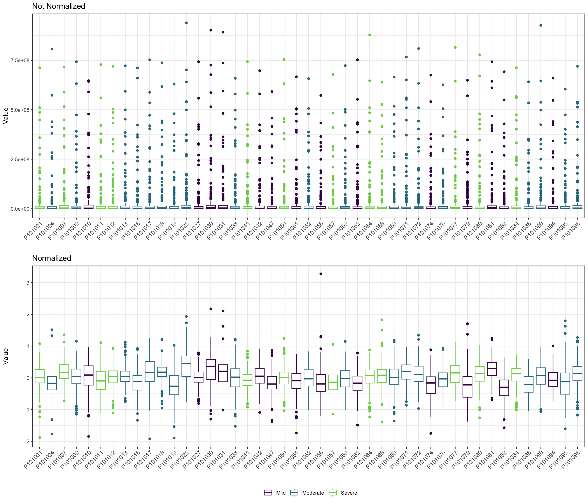
- density
pl_unnor <- PomaDensity(se_filter, group = "features") +
ggtitle("Not Normalized") +
theme(legend.position = "none") # data before normalization
pl_nor <- PomaDensity(se_normalize, group = "features") +
ggtitle("Normalized") # data after normalization
cowplot::plot_grid(pl_unnor, pl_nor, ncol = 1, align = "v")
3.1.8 Removing outliers

## class: SummarizedExperiment
## dim: 167 42
## metadata(0):
## assays(1): ''
## rownames(167): M_38768 M_38296 ... M_31787 M_63361
## rowData names(0):
## colnames(42): P101001 P101004 ... P101094 P101096
## colData names(5): group Gender Smoker Age AlcoholConsumption3.1.9 Saving datasets into RDS files
if (!dir.exists("./dataset/POMA/")) {
dir.create("./dataset/POMA/")
}
saveRDS(ExprSet, "./dataset/POMA/ExprSet_raw.RDS", compress = TRUE)
saveRDS(se_raw, "./dataset/POMA/se_raw.RDS", compress = TRUE)
saveRDS(se_check, "./dataset/POMA/se_check.RDS", compress = TRUE)
saveRDS(se_filter, "./dataset/POMA/se_filter.RDS", compress = TRUE)
saveRDS(se_impute, "./dataset/POMA/se_impute.RDS", compress = TRUE)
saveRDS(se_normalize, "./dataset/POMA/se_normalize.RDS", compress = TRUE)
saveRDS(se_processed, "./dataset/POMA/se_processed.RDS", compress = TRUE)3.2 Cluster Analysis
Hierarchical clustering is an alternative approach to k-means clustering for identifying groups in the dataset. It does not require us to pre-specify the number of clusters to be generated as is required by the k-means approach. Furthermore, hierarchical clustering has an added advantage over K-means clustering in that it results in an attractive tree-based representation of the observations, called a dendrogram.
Note: Please remember to preprocess your data before clustering
3.2.1 Loading packages
knitr::opts_chunk$set(warning = F)
library(dplyr)
library(tibble)
library(POMA)
library(ggplot2)
library(SummarizedExperiment)
library(cluster) # clustering algorithms
library(factoextra) # clustering visualization
library(dendextend) # for comparing two dendrograms
# rm(list = ls())
options(stringsAsFactors = F)
options(future.globals.maxSize = 1000 * 1024^2)3.2.3 Hierarchical Clustering
Hierarchical clustering can be divided into two main types: agglomerative and divisive.
Calculate dissimilarity
However, a bigger question is: How do we measure the dissimilarity between two clusters of observations? A number of different cluster agglomeration methods (i.e, linkage methods) have been developed to answer to this question. The most common types methods are:
- Maximum or complete linkage clustering: It computes all pairwise dissimilarities between the elements in cluster 1 and the elements in cluster 2, and considers the largest value (i.e., maximum value) of these dissimilarities as the distance between the two clusters. It tends to produce more compact clusters.
Minimum or single linkage clustering: It computes all pairwise dissimilarities between the elements in cluster 1 and the elements in cluster 2, and considers the smallest of these dissimilarities as a linkage criterion. It tends to produce long, “loose” clusters.
Mean or average linkage clustering: It computes all pairwise dissimilarities between the elements in cluster 1 and the elements in cluster 2, and considers the average of these dissimilarities as the distance between the two clusters.
Centroid linkage clustering: It computes the dissimilarity between the centroid for cluster 1 (a mean vector of length p variables) and the centroid for cluster 2.
Ward’s minimum variance method: It minimizes the total within-cluster variance. At each step the pair of clusters with minimum between-cluster distance are merged.
Data Processing:
Rows are observations (individuals) and columns are variables.
Any missing value in the data must be removed or estimated.
The data must be standardized (i.e., scaled) to make variables comparable. Recall that, standardization consists of transforming the variables such that they have mean zero and standard deviation one.
Functions to computing hierarchical clustering:
hclust [in stats package] and agnes [in cluster package] for agglomerative hierarchical clustering.
diana [in cluster package] for divisive hierarchical clustering.
HieraCluster <- function(object,
method_dis = c("euclidean", "bray"),
method_cluster = c("average", "single", "complete", "ward", "ward.D2"),
cluster_type = c("Agglomerative", "Divisive"),
tree_num = 4) {
features_tab <- SummarizedExperiment::assay(object)
metadata_tab <- SummarizedExperiment::colData(object)
df <- t(features_tab)
if (cluster_type == "Agglomerative") {
# Agglomerative Hierarchical Clustering
# Dissimilarity matrix
d <- dist(df, method = method_dis)
# Hierarchical clustering using Linkage method
hc <- hclust(d, method = method_cluster)
# hc <- agnes(df, method = method_cluster)
####### identifying the strongest clustering structure ################
# # methods to assess
# m <- c( "average", "single", "complete", "ward")
# names(m) <- c( "average", "single", "complete", "ward")
#
# # function to compute coefficient
# ac <- function(x) {
# agnes(df, method = x)$ac
# }
#
# map_dbl(m, ac)
} else if (cluster_type == "Divisive") {
# Divisive Hierarchical Clustering
hc <- diana(df, metric = method_dis)
}
hc_res <- as.hclust(hc)
sub_grp <- cutree(hc_res, k = tree_num)
plot(hc_res, cex = 0.6)
rect.hclust(hc_res, k = tree_num, border = 2:(tree_num+1))
res <- list(data=df,
cluster=sub_grp,
hc=hc_res)
return(res)
}3.2.3.1 Agglomerative Hierarchical Clustering
Agglomerative clustering: It’s also known as AGNES (Agglomerative Nesting). It works in a bottom-up manner. That is, each object is initially considered as a single-element cluster (leaf). At each step of the algorithm, the two clusters that are the most similar are combined into a new bigger cluster (nodes). This procedure is iterated until all points are member of just one single big cluster (root). The result is a tree which can be plotted as a dendrogram.
- Calculation
Agg_hc_res <- HieraCluster(
object = se_normalize,
method_dis = "euclidean",
method_cluster = "ward.D2",
cluster_type = "Agglomerative")
- Visualization: visualize the result in a scatter plot

3.2.3.2 Divisive Hierarchical Clustering
Divisive hierarchical clustering: It’s also known as DIANA (Divise Analysis) and it works in a top-down manner. The algorithm is an inverse order of AGNES. It begins with the root, in which all objects are included in a single cluster. At each step of iteration, the most heterogeneous cluster is divided into two. The process is iterated until all objects are in their own cluster.
- Calculation
Div_hc_res <- HieraCluster(
object = se_normalize,
method_dis = "euclidean",
method_cluster = "ward",
cluster_type = "Divisive")
- Visualization: visualize the result in a scatter plot

3.2.3.3 Comparison
- dendrograms: In the dendrogram displayed above, each leaf corresponds to one observation.
Agg_hc_dend <- as.dendrogram(Agg_hc_res$hc)
Div_hc_dend <- as.dendrogram(Div_hc_res$hc)
tanglegram(Agg_hc_dend, Div_hc_dend)
- tanglegrams
dend_list <- dendlist(Agg_hc_dend, Div_hc_dend)
tanglegram(Agg_hc_dend, Div_hc_dend,
highlight_distinct_edges = FALSE, # Turn-off dashed lines
common_subtrees_color_lines = FALSE, # Turn-off line colors
common_subtrees_color_branches = TRUE, # Color common branches
main = paste("entanglement =", round(entanglement(dend_list), 2)))

3.2.4 Partitional Clustering
K-means clustering is the most commonly used unsupervised machine learning algorithm for partitioning a given data set into a set of k groups (i.e. k clusters), where k represents the number of groups pre-specified by the analyst.
PartCluster <- function(object,
cluster_num = 4) {
features_tab <- SummarizedExperiment::assay(object)
metadata_tab <- SummarizedExperiment::colData(object)
df <- t(features_tab)
res <- kmeans(df, centers = cluster_num)
# show clusters
print(fviz_cluster(list(data = df,
cluster = res$cluster)))
return(res)
}
Kcluster_res <- PartCluster(
object = se_normalize,
cluster_num = 4)
3.3 Chemometrics Analysis
The functions for Chemometrics Analysis in POMA (Castellano-Escuder et al. 2021) implemented from mixOmics (Rohart et al. 2017).
Note: Please also remember to preprocess your data before running this sub-chapter.
3.3.3 Principal Component Analysis (PCA)
The aim of PCA (Jolliffe 2005) is to reduce the dimensionality of the data whilst retaining as much information as possible. ‘Information’ is referred here as variance. The idea is to create uncorrelated artificial variables called principal components (PCs) that combine in a linear manner the original (possibly correlated) variables.
poma_pca <- PomaMultivariate(se_processed, method = "pca")
poma_pca$scoresplot +
ggtitle("Scores Plot (pca)")
3.3.4 Partial Least Squares-Discriminant Analysis (PLS-DA)
Partial Least Squares (PLS) regression is a multivariate methodology which relates two data matrices X (e.g. transcriptomics) and Y (e.g. lipids). PLS goes beyond traditional multiple regression by modelling the structure of both matrices. Unlike traditional multiple regression models, it is not limited to uncorrelated variables. One of the many advantages of PLS is that it can handle many noisy, collinear (correlated) and missing variables and can also simultaneously model several response variables in Y.
- Calculation
- scatter plot

- errors plot
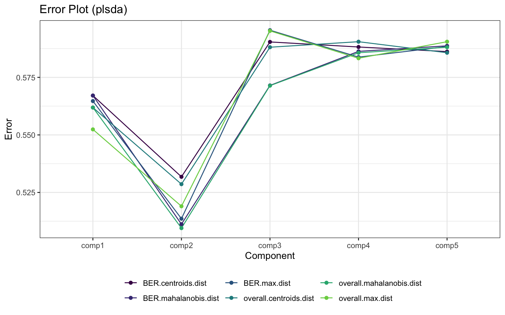
3.3.5 Sparse Partial Least Squares-Discriminant Analysis (sPLS-DA)
Even though PLS is highly efficient in a high dimensional context, the interpretability of PLS needed to be improved. sPLS has been recently developed by our team to perform simultaneous variable selection in both data sets X and Y data sets, by including LASSO penalizations in PLS on each pair of loading vectors
- Calculation
- scatter plot

3.3.7 Chemometrics Analysis by own scripts
DR_fun <- function(
x,
group,
group_names,
DRtype = c("PCA", "PLS", "OPLS")) {
# x = se_processed
# group = "group"
# group_names = c("Mild", "Severe")
# DRtype = "PCA"
# dataseat
metadata <- SummarizedExperiment::colData(x) %>%
as.data.frame()
profile <- SummarizedExperiment::assay(x) %>%
as.data.frame()
colnames(metadata)[which(colnames(metadata) == group)] <- "CompVar"
phenotype <- metadata %>%
dplyr::filter(CompVar %in% group_names)
match_order_index <- sort(pmatch(unique(phenotype$CompVar), group_names), decreasing = F)
group_names_new <- group_names[match_order_index]
phenotype$CompVar <- factor(as.character(phenotype$CompVar),
levels = group_names_new)
sid <- intersect(rownames(phenotype), colnames(profile))
phen <- phenotype[pmatch(sid, rownames(phenotype)), , ]
prof <- profile %>%
dplyr::select(all_of(sid))
if (!all(colnames(prof) == rownames(phen))) {
stop("Wrong Order")
}
prof_cln <- prof
dataMatrix <- prof_cln %>% t() # row->sampleID; col->features
sampleMetadata <- phen %>% # row->sampleID; col->features
dplyr::mutate(CompVar = factor(as.character(CompVar),
levels = group_names_new)) %>%
dplyr::mutate(Color = factor(as.character(CompVar),
levels = group_names_new),
Color = as.character(Color))
if (DRtype == "PCA") {
fit <- ropls::opls(dataMatrix)
plot(fit,
typeVc = "x-score",
parAsColFcVn = sampleMetadata$CompVar,
)
} else if (DRtype == "PLS") {
fit <- ropls::opls(dataMatrix, sampleMetadata$CompVar)
plot(fit,
typeVc = "x-score",
parAsColFcVn = sampleMetadata$CompVar,
)
# return(fit)
} else if (DRtype == "OPLS") {
# only for binary classification
fit <- ropls::opls(dataMatrix, sampleMetadata$CompVar,
predI = 1, orthoI = NA)
plot(fit,
typeVc = "x-score",
parAsColFcVn = sampleMetadata$CompVar,
)
# return(fit)
}
return(fit)
}- Principal Component Analysis (PCA)
fit <- DR_fun(
x = se_processed,
group = "group",
group_names = c("Mild", "Severe"),
DRtype = "PCA")## PCA
## 26 samples x 167 variables
## standard scaling of predictors
## R2X(cum) pre ort
## Total 0.528 5 0 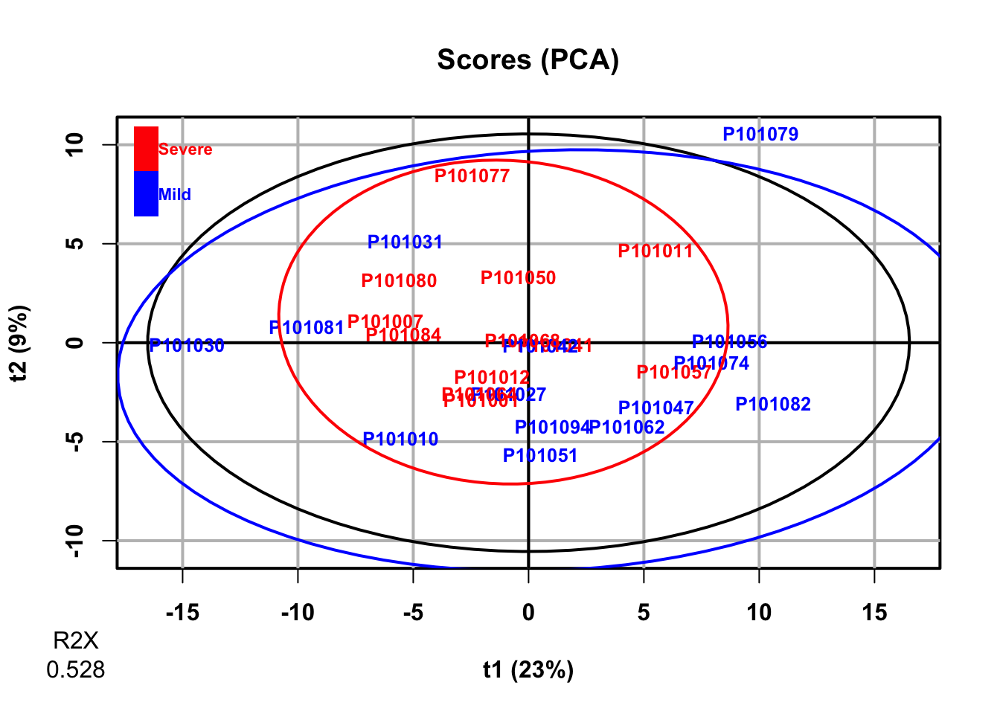
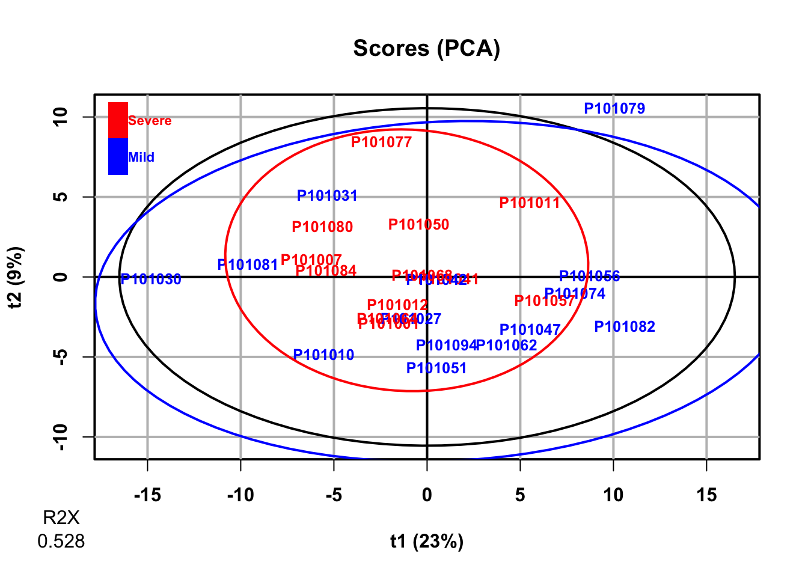
- Partial Least Squares-Discriminant Analysis (PLS-DA)
fit <- DR_fun(
x = se_processed,
group = "group",
group_names = c("Mild", "Severe"),
DRtype = "PLS")## PLS-DA
## 26 samples x 167 variables and 1 response
## standard scaling of predictors and response(s)
## R2X(cum) R2Y(cum) Q2(cum) RMSEE pre ort pR2Y pQ2
## Total 0.296 0.857 0.537 0.2 2 0 0.25 0.05 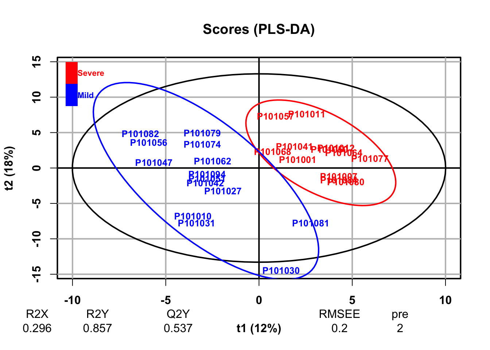
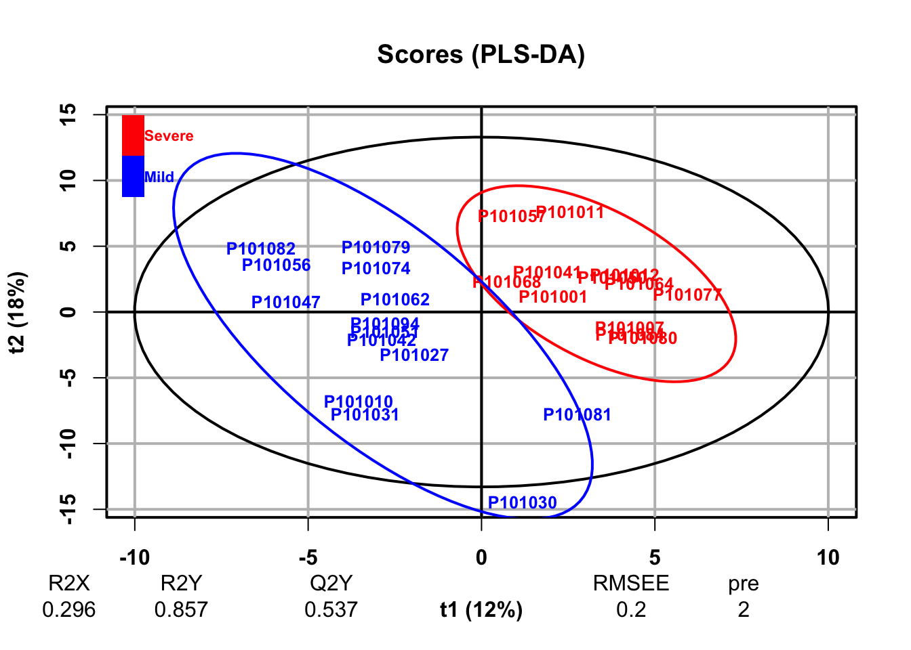
- Orthogonal Partial Least Squares-Discriminant Analysis (orthoPLS-DA)
fit <- DR_fun(
x = se_processed,
group = "group",
group_names = c("Mild", "Severe"),
DRtype = "OPLS")## OPLS-DA
## 26 samples x 167 variables and 1 response
## standard scaling of predictors and response(s)
## R2X(cum) R2Y(cum) Q2(cum) RMSEE pre ort pR2Y pQ2
## Total 0.402 0.99 0.521 0.0566 1 3 0.05 0.05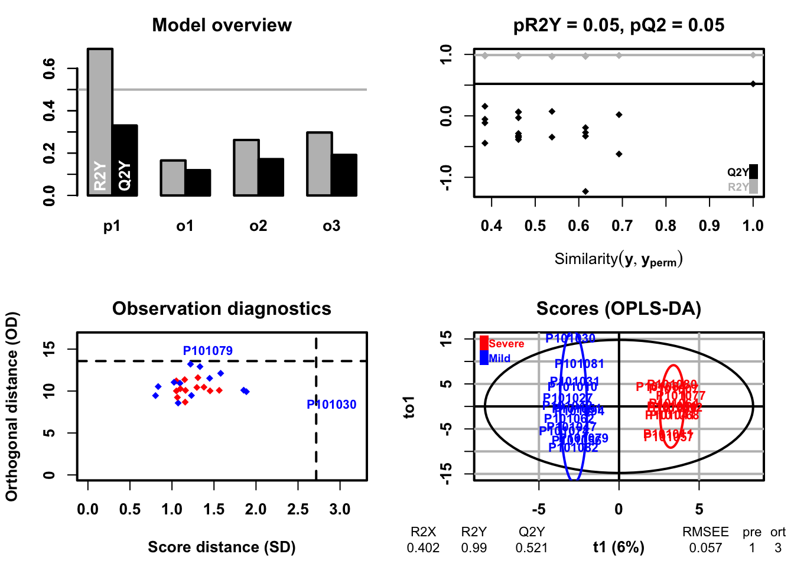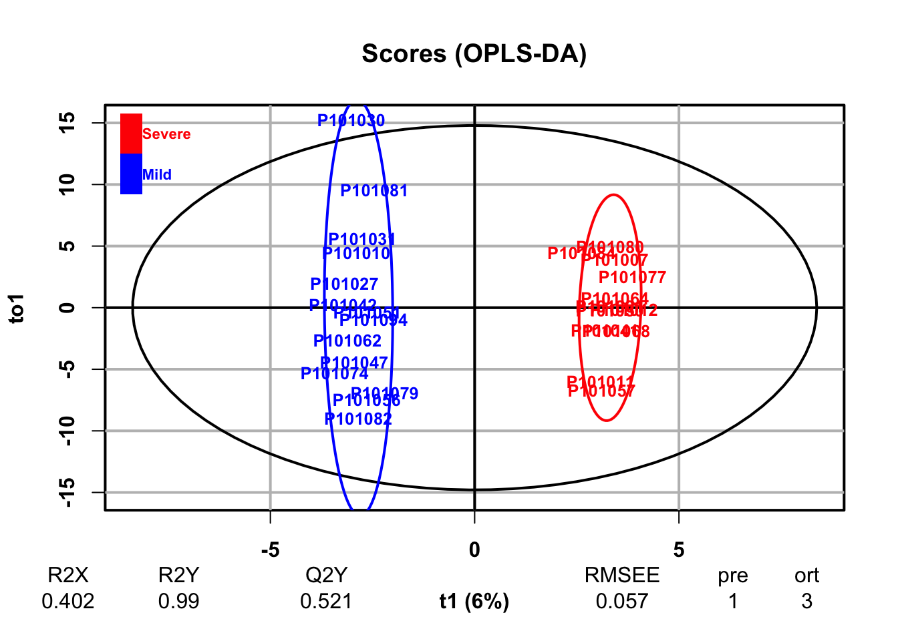
3.4 Univariate Analysis
Univariate analysis explores each variable in a data set, separately and it uses traditional statistical methods on single variable to calculate the statistics, such as fold change, p-value, etc. Note: Please also remember to preprocess your data before running this sub-chapter.
3.4.3 Fold Change Analysis
- RawData (inputed data)
FoldChange <- function(
x,
group,
group_names) {
# x = se_impute
# group = "group"
# group_names = c("Mild", "Severe")
# dataseat
metadata <- SummarizedExperiment::colData(x) %>%
as.data.frame()
profile <- SummarizedExperiment::assay(x) %>%
as.data.frame()
colnames(metadata)[which(colnames(metadata) == group)] <- "CompVar"
phenotype <- metadata %>%
dplyr::filter(CompVar %in% group_names) %>%
dplyr::mutate(CompVar = as.character(CompVar)) %>%
dplyr::mutate(CompVar = factor(CompVar, levels = group_names))
sid <- intersect(rownames(phenotype), colnames(profile))
phen <- phenotype[pmatch(sid, rownames(phenotype)), , ]
prof <- profile %>%
dplyr::select(all_of(sid))
if (!all(colnames(prof) == rownames(phen))) {
stop("Wrong Order")
}
fc_res <- apply(prof, 1, function(x1, y1) {
dat <- data.frame(value = as.numeric(x1), group = y1)
mn <- tapply(dat$value, dat$group, function(x){
mean(x, na.rm = TRUE)
}) %>%
as.data.frame() %>%
stats::setNames("value") %>%
tibble::rownames_to_column("Group")
mn1 <- with(mn, mn[Group %in% group_names[1], "value"])
mn2 <- with(mn, mn[Group %in% group_names[2], "value"])
mnall <- mean(dat$value, na.rm = TRUE)
if (all(mn1 != 0, mn2 != 0)) {
fc <- mn1 / mn2
} else {
fc <- NA
}
logfc <- log2(fc)
res <- c(fc, logfc, mnall, mn1, mn2)
return(res)
}, phen$CompVar) %>%
base::t() %>% data.frame() %>%
tibble::rownames_to_column("Feature")
colnames(fc_res) <- c("FeatureID", "FoldChange",
"Log2FoldChange",
"Mean Abundance\n(All)",
paste0("Mean Abundance\n", c("former", "latter")))
# Number of Group
dat_status <- table(phen$CompVar)
dat_status_number <- as.numeric(dat_status)
dat_status_name <- names(dat_status)
fc_res$Block <- paste(paste(dat_status_number[1], dat_status_name[1], sep = "_"),
"vs",
paste(dat_status_number[2], dat_status_name[2], sep = "_"))
res <- fc_res %>%
dplyr::select(FeatureID, Block, everything())
return(res)
}
fc_res <- FoldChange(
x = se_impute,
group = "group",
group_names = c("Mild", "Moderate"))
head(fc_res)## FeatureID Block FoldChange Log2FoldChange Mean Abundance\n(All) Mean Abundance\nformer Mean Abundance\nlatter
## 1 M_38768 14_Mild vs 19_Moderate 0.8977727 -0.15557781 37464768.7 35159693.7 39163245.1
## 2 M_38296 14_Mild vs 19_Moderate 0.7827914 -0.35330013 4140693.4 3570299.1 4560983.9
## 3 M_63436 14_Mild vs 19_Moderate 0.7982418 -0.32510221 734958.7 641591.4 803755.6
## 4 M_57814 14_Mild vs 19_Moderate 0.9414267 -0.08707934 267247.3 258005.0 274057.4
## 5 M_52984 14_Mild vs 19_Moderate 0.8476930 -0.23838621 136374.4 123589.4 145795.0
## 6 M_48762 14_Mild vs 19_Moderate 0.3214408 -1.63737503 4371547.5 1973236.4 6138724.23.4.4 T Test
group_names <- c("Mild", "Severe")
se_processed_subset <- se_processed[, se_processed$group %in% group_names]
se_processed_subset$group <- factor(as.character(se_processed_subset$group))
ttest_res <- PomaUnivariate(se_processed_subset, method = "ttest")
head(ttest_res)## # A tibble: 6 × 9
## feature FC diff_means pvalue pvalueAdj mean_Mild mean_Severe sd_Mild sd_Severe
## <chr> <dbl> <dbl> <dbl> <dbl> <dbl> <dbl> <dbl> <dbl>
## 1 M_38768 0.116 0.087 0.621 0.893 -0.0990 -0.0115 0.528 0.354
## 2 M_38296 -0.028 0.168 0.309 0.730 -0.163 0.00462 0.504 0.307
## 3 M_63436 -0.395 0.082 0.594 0.878 -0.0584 0.0231 0.402 0.368
## 4 M_57814 2.24 -0.024 0.827 0.952 -0.0192 -0.0431 0.327 0.223
## 5 M_52603 2.46 0.034 0.771 0.952 0.0236 0.0580 0.238 0.339
## 6 M_53174 0.178 0.103 0.546 0.878 -0.126 -0.0224 0.375 0.4703.4.5 Wilcoxon Test
## # A tibble: 6 × 9
## feature FC diff_means pvalue pvalueAdj mean_Mild mean_Severe sd_Mild sd_Severe
## <chr> <dbl> <dbl> <dbl> <dbl> <dbl> <dbl> <dbl> <dbl>
## 1 M_38768 0.116 0.087 0.560 0.867 -0.0990 -0.0115 0.528 0.354
## 2 M_38296 -0.028 0.168 0.145 0.576 -0.163 0.00462 0.504 0.307
## 3 M_63436 -0.395 0.082 0.560 0.867 -0.0584 0.0231 0.402 0.368
## 4 M_57814 2.24 -0.024 0.940 0.981 -0.0192 -0.0431 0.327 0.223
## 5 M_52603 2.46 0.034 0.940 0.981 0.0236 0.0580 0.238 0.339
## 6 M_53174 0.178 0.103 0.705 0.912 -0.126 -0.0224 0.375 0.4703.4.6 Limma Test
Limma_res <- PomaLimma(se_processed_subset, contrast = paste(group_names, collapse = "-"), adjust = "fdr")
head(Limma_res)## # A tibble: 6 × 7
## feature logFC AveExpr t P.Value adj.P.Val B
## <chr> <dbl> <dbl> <dbl> <dbl> <dbl> <dbl>
## 1 M_42449 -0.455 -0.0649 -3.24 0.00253 0.217 -2.34
## 2 M_37482 0.535 0.0923 2.99 0.00499 0.217 -2.69
## 3 M_62566 -0.389 0.0428 -2.95 0.00550 0.217 -2.74
## 4 M_19263 -0.420 -0.0546 -2.87 0.00679 0.217 -2.85
## 5 M_1566 -0.397 -0.0456 -2.83 0.00761 0.217 -2.91
## 6 M_43761 -0.440 0.0168 -2.82 0.00780 0.217 -2.923.4.7 Volcano plot
se_impute_subset <- se_impute[, se_impute$group %in% group_names]
se_impute_subset$group <- factor(as.character(se_impute_subset$group))
PomaVolcano(se_impute_subset,
pval = "raw",
pval_cutoff = 0.1,
log2FC = 0.2,
xlim = 1,
labels = TRUE,
plot_title = TRUE)
3.4.8 VIP (Variable influence on projection & coefficient)
Variable influence on projection (VIP) for orthogonal projections to latent structures (OPLS)
Variable influence on projection (VIP) for projections to latent structures (PLS)
VIP_fun <- function(
x,
group,
group_names,
VIPtype = c("OPLS", "PLS"),
vip_cutoff = 1) {
# x = se_normalize
# group = "group"
# group_names = c("Mild", "Severe")
# VIPtype = "PLS"
# vip_cutoff = 1
metadata <- SummarizedExperiment::colData(x) %>%
as.data.frame()
profile <- SummarizedExperiment::assay(x) %>%
as.data.frame()
colnames(metadata)[which(colnames(metadata) == group)] <- "CompVar"
phenotype <- metadata %>%
dplyr::filter(CompVar %in% group_names) %>%
dplyr::mutate(CompVar = as.character(CompVar)) %>%
dplyr::mutate(CompVar = factor(CompVar, levels = group_names))
sid <- intersect(rownames(phenotype), colnames(profile))
phen <- phenotype[pmatch(sid, rownames(phenotype)), , ]
prof <- profile %>%
dplyr::select(all_of(sid))
if (!all(colnames(prof) == rownames(phen))) {
stop("Wrong Order")
}
dataMatrix <- prof %>% base::t() # row->sampleID; col->features
sampleMetadata <- phen # row->sampleID; col->features
comparsionVn <- sampleMetadata[, "CompVar"]
# corrlation between group and features
pvaVn <- apply(dataMatrix, 2,
function(feaVn) cor.test(as.numeric(comparsionVn), feaVn)[["p.value"]])
library(ropls)
if (VIPtype == "OPLS") {
vipVn <- getVipVn(opls(dataMatrix,
comparsionVn,
predI = 1,
orthoI = NA,
fig.pdfC = "none"))
} else {
vipVn <- getVipVn(opls(dataMatrix,
comparsionVn,
predI = 1,
fig.pdfC = "none"))
}
quantVn <- qnorm(1 - pvaVn / 2)
rmsQuantN <- sqrt(mean(quantVn^2))
opar <- par(font = 2, font.axis = 2, font.lab = 2,
las = 1,
mar = c(5.1, 4.6, 4.1, 2.1),
lwd = 2, pch = 16)
plot(pvaVn,
vipVn,
col = "red",
pch = 16,
xlab = "p-value", ylab = "VIP", xaxs = "i", yaxs = "i")
box(lwd = 2)
curve(qnorm(1 - x / 2) / rmsQuantN, 0, 1, add = TRUE, col = "red", lwd = 3)
abline(h = 1, col = "blue")
abline(v = 0.05, col = "blue")
res_temp <- data.frame(
FeatureID = names(vipVn),
VIP = vipVn,
CorPvalue = pvaVn) %>%
dplyr::arrange(desc(VIP))
vip_select <- res_temp %>%
dplyr::filter(VIP > vip_cutoff)
pl <- ggplot(vip_select, aes(FeatureID, VIP)) +
geom_segment(aes(x = FeatureID, xend = FeatureID,
y = 0, yend = VIP)) +
geom_point(shape = 21, size = 5, color = '#008000' ,fill = '#008000') +
geom_point(aes(1,2.5), color = 'white') +
geom_hline(yintercept = 1, linetype = 'dashed') +
scale_y_continuous(expand = c(0, 0)) +
labs(x = '', y = 'VIP value') +
theme_bw() +
theme(legend.position = 'none',
legend.text = element_text(color = 'black',size = 12, family = 'Arial', face = 'plain'),
panel.background = element_blank(),
panel.grid = element_blank(),
axis.text = element_text(color = 'black',size = 15, family = 'Arial', face = 'plain'),
axis.text.x = element_text(angle = 90),
axis.title = element_text(color = 'black',size = 15, family = 'Arial', face = 'plain'),
axis.ticks = element_line(color = 'black'),
axis.ticks.x = element_blank())
# Number of Group
dat_status <- table(phen$CompVar)
dat_status_number <- as.numeric(dat_status)
dat_status_name <- names(dat_status)
res_temp$Block <- paste(paste(dat_status_number[1], dat_status_name[1], sep = "_"),
"vs",
paste(dat_status_number[2], dat_status_name[2], sep = "_"))
res_df <- res_temp %>%
dplyr::select(FeatureID, Block, everything())
res <- list(vip = res_df,
plot = pl)
return(res)
}
vip_res <- VIP_fun(
x = se_normalize,
group = "group",
group_names = c("Mild", "Severe"),
VIPtype = "PLS",
vip_cutoff = 1)## PLS-DA
## 26 samples x 167 variables and 1 response
## standard scaling of predictors and response(s)
## R2X(cum) R2Y(cum) Q2(cum) RMSEE pre ort pR2Y pQ2
## Total 0.12 0.692 0.33 0.288 1 0 0.1 0.05
## FeatureID Block VIP CorPvalue
## M_42449 M_42449 14_Mild vs 12_Severe 2.362694 0.002247897
## M_62566 M_62566 14_Mild vs 12_Severe 2.288128 0.003300438
## M_1566 M_1566 14_Mild vs 12_Severe 2.143655 0.006556886
## M_19263 M_19263 14_Mild vs 12_Severe 2.128317 0.007023483
## M_52446 M_52446 14_Mild vs 12_Severe 2.059461 0.009476225
## M_37482 M_37482 14_Mild vs 12_Severe 2.052135 0.009774742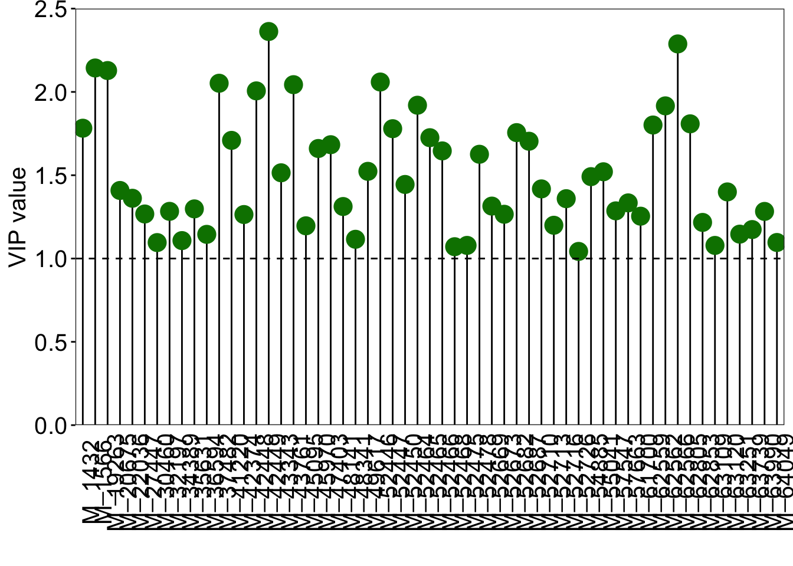
3.4.9 T-test by local codes
- significant differences between two groups (p value)
t_fun <- function(
x,
group,
group_names) {
# x = se_normalize
# group = "group"
# group_names = c("Mild", "Severe")
# dataseat
metadata <- SummarizedExperiment::colData(x) %>%
as.data.frame()
profile <- SummarizedExperiment::assay(x) %>%
as.data.frame()
# rename variables
colnames(metadata)[which(colnames(metadata) == group)] <- "CompVar"
phenotype <- metadata %>%
dplyr::filter(CompVar %in% group_names) %>%
dplyr::mutate(CompVar = as.character(CompVar)) %>%
dplyr::mutate(CompVar = factor(CompVar, levels = group_names))
sid <- intersect(rownames(phenotype), colnames(profile))
phen <- phenotype[pmatch(sid, rownames(phenotype)), , ]
prof <- profile %>%
dplyr::select(all_of(sid))
if (!all(colnames(prof) == rownames(phen))) {
stop("Wrong Order")
}
t_res <- apply(prof, 1, function(x1, y1) {
dat <- data.frame(value = as.numeric(x1), group = y1)
rest <- t.test(data = dat, value ~ group)
res <- c(rest$statistic, rest$p.value)
return(res)
}, phen$CompVar) %>%
base::t() %>% data.frame() %>%
tibble::rownames_to_column("Feature")
colnames(t_res) <- c("FeatureID", "Statistic", "Pvalue")
t_res$AdjustedPvalue <- p.adjust(as.numeric(t_res$Pvalue), method = "BH")
# Number of Group
dat_status <- table(phen$CompVar)
dat_status_number <- as.numeric(dat_status)
dat_status_name <- names(dat_status)
t_res$Block <- paste(paste(dat_status_number[1], dat_status_name[1], sep = "_"),
"vs",
paste(dat_status_number[2], dat_status_name[2], sep = "_"))
res <- t_res %>%
dplyr::select(FeatureID, Block, everything())
return(res)
}
ttest_res <- t_fun(
x = se_normalize,
group = "group",
group_names = c("Mild", "Severe"))
head(ttest_res)## FeatureID Block Statistic Pvalue AdjustedPvalue
## 1 M_38768 14_Mild vs 12_Severe -0.5018649 0.6205743 0.8928355
## 2 M_38296 14_Mild vs 12_Severe -1.0405745 0.3094567 0.7300466
## 3 M_63436 14_Mild vs 12_Severe -0.5398558 0.5942962 0.8782962
## 4 M_57814 14_Mild vs 12_Severe 0.2204845 0.8274429 0.9515249
## 5 M_52603 14_Mild vs 12_Severe -0.2952738 0.7709351 0.9515249
## 6 M_53174 14_Mild vs 12_Severe -0.6134155 0.5461908 0.87829623.4.10 Merging result
Foldchange by Raw Data
VIP by Normalized Data
test Pvalue by Normalized Data
mergedResults <- function(
fc_result,
vip_result,
test_result,
group_names,
group_labels) {
# fc_result = fc_res
# vip_result = vip_res$vip
# test_result = ttest_res
# group_names = c("Mild", "Severe")
# group_labels = c("Mild", "Severe")
if (is.null(vip_result)) {
mdat <- fc_result %>%
dplyr::mutate(Block2 = paste(group_labels, collapse = " vs ")) %>%
dplyr::mutate(FeatureID = make.names(FeatureID)) %>%
dplyr::select(-all_of(c("Mean Abundance\n(All)",
"Mean Abundance\nformer",
"Mean Abundance\nlatter"))) %>%
dplyr::inner_join(test_result %>%
dplyr::select(-Block) %>%
dplyr::mutate(FeatureID = make.names(FeatureID)),
by = "FeatureID")
res <- mdat %>%
dplyr::select(FeatureID, Block2, Block,
FoldChange, Log2FoldChange,
Statistic, Pvalue, AdjustedPvalue,
everything()) %>%
dplyr::arrange(AdjustedPvalue, Log2FoldChange)
} else {
mdat <- fc_result %>%
dplyr::mutate(Block2 = paste(group_labels, collapse = " vs ")) %>%
dplyr::mutate(FeatureID = make.names(FeatureID)) %>%
dplyr::select(-all_of(c("Mean Abundance\n(All)",
"Mean Abundance\nformer",
"Mean Abundance\nlatter"))) %>%
dplyr::inner_join(vip_result %>%
dplyr::select(-Block) %>%
dplyr::mutate(FeatureID = make.names(FeatureID)),
by = "FeatureID") %>%
dplyr::inner_join(test_result %>%
dplyr::select(-Block) %>%
dplyr::mutate(FeatureID = make.names(FeatureID)),
by = "FeatureID")
res <- mdat %>%
dplyr::select(FeatureID, Block2, Block,
FoldChange, Log2FoldChange,
VIP, CorPvalue,
Statistic, Pvalue, AdjustedPvalue,
everything()) %>%
dplyr::arrange(AdjustedPvalue, Log2FoldChange)
}
return(res)
}
m_results <- mergedResults(
fc_result = fc_res,
vip_result = vip_res$vip,
test_result = ttest_res,
group_names = c("Mild", "Severe"),
group_labels = c("Mild", "Severe"))
head(m_results)## FeatureID Block2 Block FoldChange Log2FoldChange VIP CorPvalue Statistic Pvalue AdjustedPvalue
## 1 M_42449 Mild vs Severe 14_Mild vs 19_Moderate 0.6571801 -0.6056393 2.362694 0.002247897 -3.498896 0.001881585 0.2132448
## 2 M_52446 Mild vs Severe 14_Mild vs 19_Moderate 0.7040861 -0.5061763 2.059461 0.009476225 -2.892892 0.008125613 0.2132448
## 3 M_1566 Mild vs Severe 14_Mild vs 19_Moderate 0.7161609 -0.4816443 2.143655 0.006556886 -3.077688 0.005431005 0.2132448
## 4 M_19263 Mild vs Severe 14_Mild vs 19_Moderate 0.7165011 -0.4809592 2.128317 0.007023483 -3.073546 0.005774977 0.2132448
## 5 M_42448 Mild vs Severe 14_Mild vs 19_Moderate 0.7577644 -0.4001788 2.006246 0.011828403 -2.793941 0.010215320 0.2132448
## 6 M_43761 Mild vs Severe 14_Mild vs 19_Moderate 0.8685495 -0.2033201 2.043515 0.010136007 -2.822338 0.009428795 0.21324483.4.11 Volcano of Merged Results
get_volcano <- function(
inputdata,
group_names,
group_labels,
group_colors,
x_index,
x_cutoff,
y_index,
y_cutoff,
plot = TRUE) {
# inputdata = m_results
# group_names = c("Mild", "Severe")
# group_labels = c("Mild", "Severe")
# group_colors = c("red", "blue")
# x_index = "Log2FoldChange"
# x_cutoff = 0.5
# y_index = "AdjustedPvalue"
# y_cutoff = 0.5
# plot = FALSE
# selected_group <- paste(group_names, collapse = " vs ")
selected_group2 <- paste(group_labels, collapse = " vs ")
dat <- inputdata %>%
dplyr::filter(Block2 %in% selected_group2)
plotdata <- dat %>%
dplyr::mutate(FeatureID = paste(FeatureID, sep = ":")) %>%
dplyr::select(all_of(c("FeatureID", "Block2", x_index, y_index)))
if (!any(colnames(plotdata) %in% "TaxaID")) {
colnames(plotdata)[1] <- "TaxaID"
}
if (y_index == "CorPvalue") {
colnames(plotdata)[which(colnames(plotdata) == y_index)] <- "Pvalue"
y_index <- "Pvalue"
}
pl <- plot_volcano(
da_res = plotdata,
group_names = group_labels,
x_index = x_index,
x_index_cutoff = x_cutoff,
y_index = y_index,
y_index_cutoff = y_cutoff,
group_color = c(group_colors[1], "grey", group_colors[2]),
add_enrich_arrow = TRUE)
if (plot) {
res <- pl
} else {
colnames(plotdata)[which(colnames(plotdata) == x_index)] <- "Xindex"
colnames(plotdata)[which(colnames(plotdata) == y_index)] <- "Yindex"
datsignif <- plotdata %>%
dplyr::filter(abs(Xindex) > x_cutoff) %>%
dplyr::filter(Yindex < y_cutoff)
colnames(datsignif)[which(colnames(datsignif) == "Xindex")] <- x_index
colnames(datsignif)[which(colnames(datsignif) == "Yindex")] <- y_index
res <- list(figure = pl,
data = datsignif)
}
return(res)
}
lgfc_FDR_vol <- get_volcano(
inputdata = m_results,
group_names = c("Mild", "Severe"),
group_labels = c("Mild", "Severe"),
group_colors = c("red", "blue"),
x_index = "Log2FoldChange",
x_cutoff = 0.5,
y_index = "AdjustedPvalue",
y_cutoff = 0.5,
plot = FALSE)
lgfc_FDR_vol$figure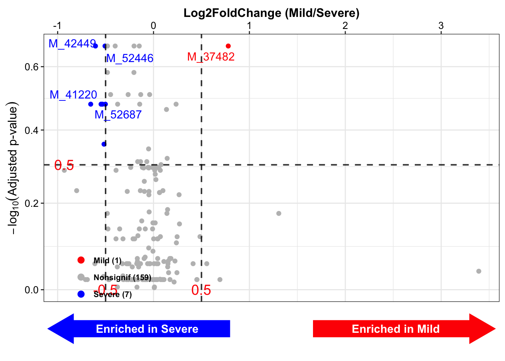
3.4.12 Adjusting for confounding variables
Controlling confounding effects by the following statistical approaches or R packages
3.4.13 Correlation Heatmaps
## # A tibble: 13,861 × 5
## feature1 feature2 R pvalue FDR
## <chr> <chr> <dbl> <dbl> <dbl>
## 1 M_52465 M_52466 0.955 3.19e-14 4.42e-10
## 2 M_44621 M_39270 0.946 3.36e-13 2.33e- 9
## 3 M_52610 M_52611 0.941 9.33e-13 4.31e- 9
## 4 M_33971 M_33972 0.939 1.39e-12 4.83e- 9
## 5 M_52464 M_52447 0.936 2.33e-12 6.10e- 9
## 6 M_52687 M_42449 0.935 2.64e-12 6.10e- 9
## 7 M_22036 M_63120 0.926 1.22e-11 2.41e- 8
## 8 M_38768 M_33972 0.925 1.42e-11 2.46e- 8
## 9 M_42449 M_52446 0.921 2.49e-11 3.83e- 8
## 10 M_44621 M_39271 0.920 2.97e-11 4.12e- 8
## # ℹ 13,851 more rows- correlation plot

- Network
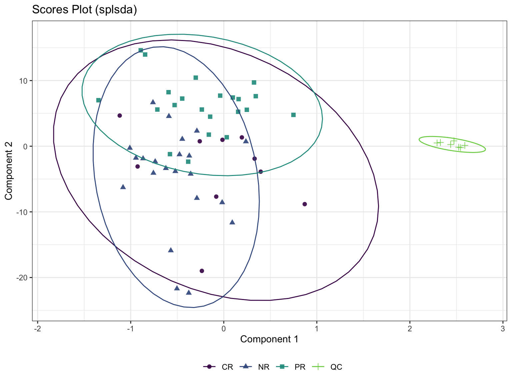
3.5 Multivariate analysis
Comparing to univariate analysis, multivariate analysis is defined as a process of involving multiple dependent variables resulting in one outcome for feature selection. Here, we use Regularized Generalized Linear Models and Random forest model to identify the biomarkers associated with Outcomes.
Lasso, Ridge and Elasticnet Regularized Generalized Linear Models for Binary Outcomes
Random forest model to select the important features
Note: Please also remember to preprocess your data before running this sub-chapter.
3.5.4 Regularized Generalized Linear Models
3.5.4.1 Lasso: alpha = 1
lasso_res <- PomaLasso(se_processed_subset, alpha = 1, labels = TRUE)
cowplot::plot_grid(lasso_res$cvLassoPlot,
lasso_res$coefficientPlot,
ncol = 2, align = "hv")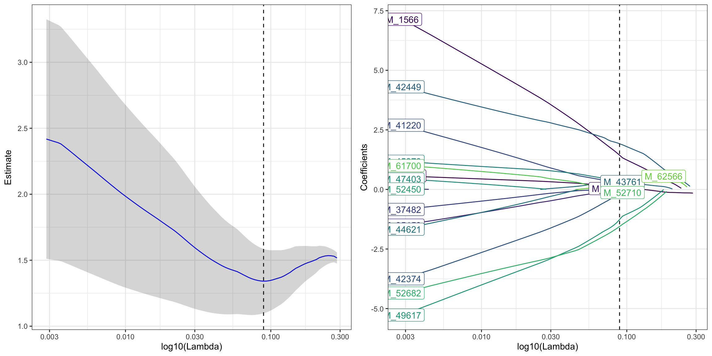
## # A tibble: 11 × 2
## feature coefficient
## <chr> <dbl>
## 1 (Intercept) 0.102
## 2 M_52682 -1.55
## 3 M_62566 0.336
## 4 M_49617 -1.26
## 5 M_52710 -0.0742
## 6 M_42449 1.92
## 7 M_45970 0.324
## 8 M_42374 -0.117
## 9 M_43761 0.319
## 10 M_41220 0.249
## 11 M_1566 1.443.5.4.2 Ridge: alpha = 0
ridge_res <- PomaLasso(se_processed_subset, alpha = 0, labels = TRUE)
cowplot::plot_grid(ridge_res$cvLassoPlot,
ridge_res$coefficientPlot,
ncol = 2, align = "hv")
## # A tibble: 168 × 2
## feature coefficient
## <chr> <dbl>
## 1 (Intercept) -0.118
## 2 M_38768 0.0163
## 3 M_38296 0.0426
## 4 M_63436 0.0351
## 5 M_57814 0.00998
## 6 M_52603 -0.0159
## 7 M_53174 -0.000721
## 8 M_19130 -0.0635
## 9 M_34404 -0.0326
## 10 M_32391 -0.0262
## # ℹ 158 more rows3.5.4.3 Elasticnet: 0 < alpha < 1
elastic_res <- PomaLasso(se_processed_subset, alpha = 0.4, labels = TRUE)
cowplot::plot_grid(elastic_res$cvLassoPlot,
elastic_res$coefficientPlot,
ncol = 2, align = "hv")
## # A tibble: 7 × 2
## feature coefficient
## <chr> <dbl>
## 1 (Intercept) -0.141
## 2 M_62566 0.224
## 3 M_42449 0.237
## 4 M_19263 0.0537
## 5 M_37482 -0.0116
## 6 M_43761 0.0507
## 7 M_1566 0.125
3.6 Network Analysis
3.6.1 Introduction
Estimating microbial association networks from high-throughput sequencing data is a common exploratory data analysis approach aiming at understanding the complex interplay of microbial communities in their natural habitat. Statistical network estimation workflows comprise several analysis steps, including methods for zero handling, data normalization and computing microbial associations. Since microbial interactions are likely to change between conditions, e.g. between healthy individuals and patients, identifying network differences between groups is often an integral secondary analysis step.
NetCoMi (Network Construction and Comparison for Microbiome Data) (Peschel et al. 2021) provides functionality for constructing, analyzing, and comparing networks suitable for the application on microbial compositional data.
The following information is from NetCoMi github.
Association measures:
Pearson coefficient (
cor()fromstatspackage)Spearman coefficient (
cor()fromstatspackage)Biweight Midcorrelation
bicor()fromWGCNApackage
Methods for zero replacement:
Adding a predefined pseudo count
Multiplicative replacement (
multReplfromzCompositionspackage)Modified EM alr-algorithm (
lrEMfromzCompositionspackage)Bayesian-multiplicative replacement (
cmultReplfromzCompositionspackage)
Normalization methods:
Total Sum Scaling (TSS) (own implementation)
Cumulative Sum Scaling (CSS) (
cumNormMatfrommetagenomeSeqpackage)Common Sum Scaling (COM) (own implementation)
Rarefying (
rrarefyfromveganpackage)Variance Stabilizing Transformation (VST)
(varianceStabilizingTransformationfromDESeq2package)Centered log-ratio (clr) transformation (
clr()fromSpiecEasipackage))
TSS, CSS, COM, VST, and the clr transformation are described in [Badri et al., 2020].
3.6.2 Loading packages
knitr::opts_chunk$set(warning = F)
library(dplyr)
library(tibble)
library(POMA)
library(ggplot2)
library(ggraph)
library(plotly)
library(SummarizedExperiment)
library(NetCoMi)
library(SPRING)
library(SpiecEasi)
# rm(list = ls())
options(stringsAsFactors = F)
options(future.globals.maxSize = 1000 * 1024^2)3.6.4 Data curation
features_tab <- SummarizedExperiment::assay(se_filter) %>%
t()
features_tab[is.na(features_tab)] <- 0
head(features_tab)## M_38768 M_38296 M_63436 M_57814 M_52603 M_53174 M_19130 M_34404 M_32391 M_20675 M_34400 M_44621 M_52689 M_52673 M_52682
## P101001 51127588 5105020 756686.2 281502.0 94392176 144048.2 25632184 123026.38 321794.2 151752512 2205732.2 402949.6 23821584 11552554 28373504
## P101004 34940596 3885477 851026.5 297304.4 115155104 217577.4 25106562 22810.19 210540.2 57703932 627949.3 288060.6 13722696 8489023 24738246
## P101007 58518636 4285130 726593.9 319016.7 79582632 211262.5 31371314 375686.47 477073.6 198430704 2856552.5 746095.9 26451790 15090030 27171710
## P101009 51118832 6665654 232959.5 242172.2 118408760 431295.3 27787270 118662.19 672746.8 105392656 1831869.2 347963.7 21134366 11239614 33480956
## P101010 83783688 9057441 650261.1 200135.8 92508664 135226.5 26685844 130040.21 263299.9 103049880 1225102.6 550802.9 32726406 19644278 36381128
## M_52677 M_52478 M_52477 M_52713 M_52716 M_52474 M_39270 M_52475 M_52748 M_52614 M_39271 M_33228 M_35186 M_34214 M_34397 M_62559
## P101001 2494246 9753736 2463866 594237.8 7622086 6879792 959249.2 40933908 14099088 3790466 1572987.8 96375552 8141286 8284910 712147.4 162056.6
## P101004 2398333 8732374 1651473 528063.9 7439745 3780738 785895.0 23139750 12378493 1889665 1101383.0 49699956 4303854 7923489 194718.0 178442.0
## P101007 2891707 9955330 3774870 780014.5 8345656 5111358 1903592.4 51188676 17399748 4683262 2026999.0 70649888 7129884 9211485 505635.2 238782.9
## P101009 2989538 10679558 2826825 978802.8 10357009 4263671 863701.9 36418292 19482396 4177870 1169707.9 41290160 5394354 8559147 159987.3 152987.9
## P101010 4624334 10877791 4131897 702736.2 7783024 5172609 1177860.8 68994568 29016166 6862688 1722600.4 57308316 6270727 7623603 446015.2 263668.8
## M_62566 M_62562 M_48341 M_35153 M_49617 M_45951 M_52710 M_53189 M_53176 M_34419 M_36600 M_54885 M_36594 M_27447 M_32350 M_62946
## P101001 265921.8 285496.1 292845.1 128661.8 381540.1 3736284 47739292 392911.0 3305130 306346432 9887348 298886.1 3238505 9004255 627613.7 395496.2
## P101004 211541.5 265036.3 331437.5 276938.1 588488.2 1839252 43678784 300383.9 3552664 263333424 9703074 356274.3 4642443 2944057 339586.8 1079166.8
## P101007 456498.2 463207.5 514893.1 185715.0 464548.8 1545863 53975068 539361.5 2035337 191261648 6431966 393623.0 3509099 3230152 662555.6 484653.9
## P101009 262397.8 322379.6 297725.7 320728.0 497342.0 3145905 47619564 487186.2 3802829 232171184 11914472 599783.6 5404004 2030452 492430.9 403058.4
## P101010 356271.0 471981.4 594546.3 113578.3 457409.1 5152494 61906028 236719.5 3049962 183104336 9366287 280123.8 3737352 2431808 373484.2 1065601.8
## M_64596 M_30460 M_27665 M_34395 M_34389 M_53195 M_19258 M_35625 M_55041 M_52697 M_52687 M_48258 M_35628 M_36602 M_21184
## P101001 46295.48 270857.8 1335229.0 199466.6 2138968 13858347 9863770 574852.4 3655240 12883511 2398777 181136336 6548460 1749937 7613153
## P101004 1017875.06 204924.9 1279771.8 226695.4 2153556 6059094 5239331 236322.3 1637351 13617571 2017056 115752200 3455001 1409849 15023415
## P101007 463587.81 320279.5 676678.7 208125.5 1348283 18901246 8920123 296148.1 7284474 19369632 2768957 102036920 3640571 1495550 23832470
## P101009 370624.53 289090.7 1098703.2 583087.2 4572006 9496899 7639714 269586.8 3065707 14302725 3650640 118663320 5087503 3099956 12286962
## P101010 1228528.25 216454.2 520595.4 259017.0 3558800 19940270 12844156 585791.2 2493687 19721992 1901558 154183360 5244878 3420659 14516694
## M_53180 M_33230 M_52431 M_52462 M_52464 M_52467 M_52454 M_52610 M_52465 M_42446 M_42449 M_52450 M_52461 M_19263 M_52669
## P101001 748319.2 19098412 824253.8 486910976 6794782 2280194 274026048 206279104 2204234 712253440 4006186 2641266 486655872 3874469 2759973
## P101004 917020.4 10641834 328446.0 380887616 4090405 1003667 282066016 253920496 3084690 807180352 4623029 2342063 439253152 2842332 1193472
## P101007 799016.0 14977371 469095.1 515795264 13183206 2950405 309709728 316142400 8800303 715500800 5532970 3922614 448578400 5864154 2724709
## P101009 1118435.0 13575508 518623.8 390977568 7596680 3766843 325723168 232534688 4486037 742576768 7445768 6170018 473622240 4717213 4360214
## P101010 1685150.8 19464998 795436.6 478479936 5395172 6117689 382690720 262177072 2910989 642967424 3822049 6121756 647036736 4579096 5908542
## M_52470 M_52616 M_57388 M_33955 M_35631 M_45970 M_35305 M_21127 M_61868 M_42450 M_52447 M_52449 M_52235 M_52611 M_52466
## P101001 35859212 12365879 79676.23 448634784 4035864 409595.2 863723 4804332 504846.8 358896736 30252208 43173148 1118858.8 61304088 1859952
## P101004 23531182 10655923 37269.65 413690720 3446139 230301.7 1016275 6962388 361061.4 282910752 19424238 30030992 3035421.1 78508544 2158371
## P101007 44479796 14010174 103174.72 368849632 3764448 323317.6 1214598 10822974 530824.9 404918560 57376512 50766284 7742330.5 133758544 6886556
## P101009 41899896 14814230 65198.78 365712768 3444159 420762.3 1920743 9249804 507524.6 298822048 26429340 43420376 872709.2 80545136 2995264
## P101010 64131204 12873290 41349.66 376101984 3276579 293613.2 2983894 17823292 309155.8 373251712 21732290 43622724 336274.6 104073768 2487264
## M_52452 M_52446 M_52468 M_52438 M_42448 M_52726 M_19265 M_33961 M_42398 M_19324 M_33971 M_33972 M_32497 M_63251 M_64418
## P101001 510461472 17331080 7814518 181406848 5754168 2246755 1156850 191147264 6137137 3277043 34683340 21778388 7502807 702985.6 138656.33
## P101004 573170816 17896104 8339710 122556968 3069182 863899 1564114 166379712 5143481 7207395 23345216 10599812 6293102 369620.4 143054.61
## P101007 588643712 27738444 11004061 181572112 6107326 1798405 6813304 189915296 7412535 7613864 68319096 22969486 7799882 514191.1 183824.64
## P101009 631965888 28258140 15869048 208484000 6196910 3176317 1385724 186599152 5421984 6803468 37778060 13476085 3700375 811957.7 162973.59
## P101010 590247424 18904148 11231769 306379392 6164263 4295183 2180185 217632736 5767624 7363716 62689384 24592120 5778318 392289.5 121719.19
## M_37536 M_37752 M_38168 M_47403 M_37482 M_57547 M_62805 M_38276 M_64328 M_63042 M_48580 M_6146 M_42374 M_43761 M_43343
## P101001 213331.9 914067.1 5222754.0 209255.5 142595.88 169297.7 3250618 228644.9 110957136 12292479 91572.95 177446.7 42943284 1946942.6 242105.86
## P101004 234348.0 1492370.2 156811.9 220424.3 152280.70 426227.5 2357354 281935.7 110705416 7593832 760372.12 352992.7 42325744 839404.1 133500.70
## P101007 580629.7 2570282.5 5744456.0 369675.0 38006.62 561078.5 4624754 131296.8 137532672 31897926 356734.56 480009.0 44412548 2357434.8 165855.44
## P101009 119383.3 714076.2 1239502.1 172995.7 84628.77 457043.3 2861962 149611.1 209583808 6453900 93497.58 354210.8 24181052 1745628.5 135844.00
## P101010 253655.1 1706573.6 914122.9 168503.4 101636.99 602024.4 2523801 246180.4 166666528 5296456 57886.30 650030.8 42762020 361423.8 45789.42
## M_43266 M_19266 M_36746 M_63739 M_61700 M_57663 M_52281 M_42489 M_37253 M_18281 M_52916 M_61698 M_22036 M_35675 M_1432
## P101001 1163203.9 176944.80 479072.6 761146.2 472302.3 719237.9 78466792 2865827 411578.0 179893.86 733452.4 2130324 774797.4 38006460 1354798.0
## P101004 5113189.5 189413.64 1372193.2 549097.4 265781.7 364556.1 81241496 1546570 425030.0 108887.77 683209.3 1221117 427803.9 49110836 927115.9
## P101007 3111430.8 385203.22 642121.2 792883.2 403507.7 500680.8 95847768 1403190 742298.0 769990.44 767281.1 2035627 455143.1 38735820 2731939.8
## P101009 890192.9 211997.21 778356.4 727360.0 495207.8 523549.1 35564448 1653830 466825.0 267979.69 1044029.8 2243073 422308.4 38389060 933468.1
## P101010 1139527.8 178331.05 2020790.5 913964.4 318258.2 455201.1 108681912 1007203 232876.0 40788.35 716821.7 1380906 199201.0 41784488 652360.4
## M_17945 M_15667 M_48141 M_63120 M_32506 M_64049 M_45095 M_53229 M_62520 M_63990 M_21232 M_55072 M_47118 M_35253 M_43400
## P101001 17661872 410808.2 5025640 1647630.5 969193.1 1200940.00 751527.3 768160.4 63648.33 10428390 904260.1 488544.9 281162.7 27446600 3614323
## P101004 20479238 364068.7 2705928 715426.6 784027.9 259731.38 378033.7 953194.9 203543.30 6402490 2594437.2 653107.0 362380.0 28088842 1483176
## P101007 16393367 236559.3 2406770 918737.2 1068945.8 1829885.38 589506.3 1619436.8 115621.80 10938208 5687539.5 522721.5 482046.2 21613430 5746994
## P101009 13751929 354344.8 1891979 858821.5 400273.7 109314.27 503910.2 877530.2 1488895.25 7829000 1906269.8 873616.8 619943.9 28872470 5682455
## P101010 18558476 557050.1 1919326 441160.8 552550.0 62541.41 489013.9 993923.4 235431.48 9571510 2910665.2 864624.8 677774.7 25375946 6362144
## M_41220 M_46115 M_37174 M_63109 M_62952 M_63589 M_35635 M_45415 M_32197 M_62853 M_1566 M_63681 M_61871 M_31787 M_63361
## P101001 3649905 1578011.4 70308.07 29603070 5104806 2036826 77650.82 148777.2 9709386 483999.6 2625320 434480.3 12926878 10650574 2540280.0
## P101004 1132894 440408.7 156658.04 22345812 3084011 1527389 492895.75 30709.0 7547276 299234.0 2387450 373229.5 25459396 19791136 2165454.0
## P101007 1522508 794592.2 31187.21 26736000 4728273 1855034 1017754.44 90723.0 12608340 440482.2 5896738 400386.6 15742145 52497536 2231037.2
## P101009 1882729 671497.6 21561.75 31187900 4140767 1444713 118820.93 168136.0 10253790 491346.8 2785016 301840.8 23710054 48267136 992205.4
## P101010 1265978 1133763.9 115934.38 17916018 2434359 3420016 1812900.50 163988.0 14821266 359500.1 1552196 548330.4 22917482 34226984 1125607.0
## [ reached getOption("max.print") -- omitted 1 row ]3.6.5 Associations Among Features
3.6.5.1 Single network with Pearson correlation as association measure
Since Pearson correlations may lead to compositional effects when applied to sequencing data, we use the clr transformation as normalization method. Zero treatment is necessary in this case.
InputData: numeric matrix. Can be a count matrix (rows are samples, columns are Features).
Method to compute the associations between features (argument measure).
Normalization method:
normMethod: clr
zeroMethod: multRepl
sparsMethod: threshold
A threshold of 0.3 is used as sparsification method, so that only OTUs with an absolute correlation greater than or equal to 0.3 are connected.
3.6.5.1.2 Visualizing the network
- primary plot
props_single <- netAnalyze(net_single, clustMethod = "cluster_fast_greedy")
plot(props_single,
nodeColor = "cluster",
nodeSize = "eigenvector",
title1 = "Network on metabolomics with Pearson correlations",
showTitle = TRUE,
cexTitle = 1.5)
legend(0.7, 1.1, cex = 1, title = "estimated correlation:",
legend = c("+","-"), lty = 1, lwd = 3, col = c("#009900","red"),
bty = "n", horiz = TRUE)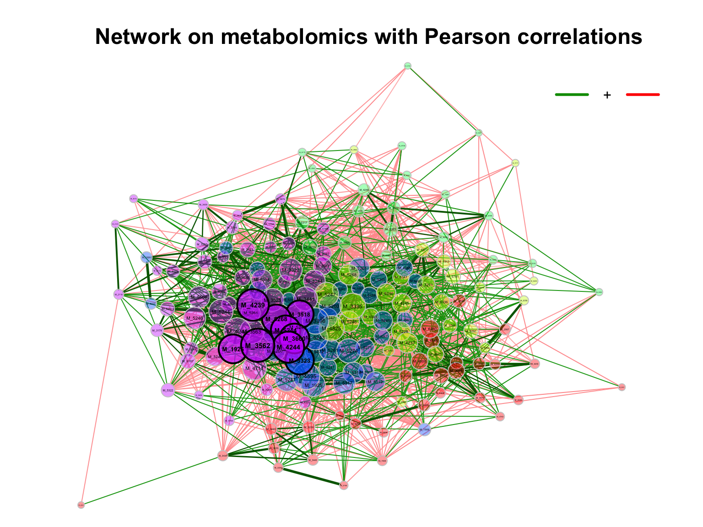
improve the visualization by changing the following arguments:
repulsion = 0.8: Place the nodes further apartrmSingles = TRUE: Single nodes are removedlabelScale = FALSEandcexLabels = 1.6: All labels have equal size and are enlarged to improve readability of small node’s labelsnodeSizeSpread = 3(default is 4): Node sizes are more similar if the value is decreased. This argument (in combination withcexNodes) is useful to enlarge small nodes while keeping the size of big nodes.
plot(props_single,
nodeColor = "cluster",
nodeSize = "eigenvector",
repulsion = 0.8,
rmSingles = TRUE,
labelScale = FALSE,
cexLabels = 1.6,
nodeSizeSpread = 3,
cexNodes = 2,
title1 = "Network on metabolomics with Pearson correlations",
showTitle = TRUE,
cexTitle = 1.5)
legend(0.7, 1.1, cex = 1.2, title = "estimated correlation:",
legend = c("+","-"), lty = 1, lwd = 3, col = c("#009900","red"),
bty = "n", horiz = TRUE)
3.6.5.2 Single network with spearman correlation as association measure
3.6.5.2.2 Visualizing the network
props_single2 <- netAnalyze(net_single2, clustMethod = "cluster_fast_greedy")
plot(props_single2,
nodeColor = "cluster",
nodeSize = "eigenvector",
repulsion = 0.8,
rmSingles = TRUE,
labelScale = FALSE,
cexLabels = 1.6,
nodeSizeSpread = 3,
cexNodes = 2,
title1 = "Network on metabolomics with Spearman correlations",
showTitle = TRUE,
cexTitle = 1.5)
legend(0.7, 1.1, cex = 1.2, title = "estimated correlation:",
legend = c("+","-"), lty = 1, lwd = 3, col = c("#009900","red"),
bty = "n", horiz = TRUE)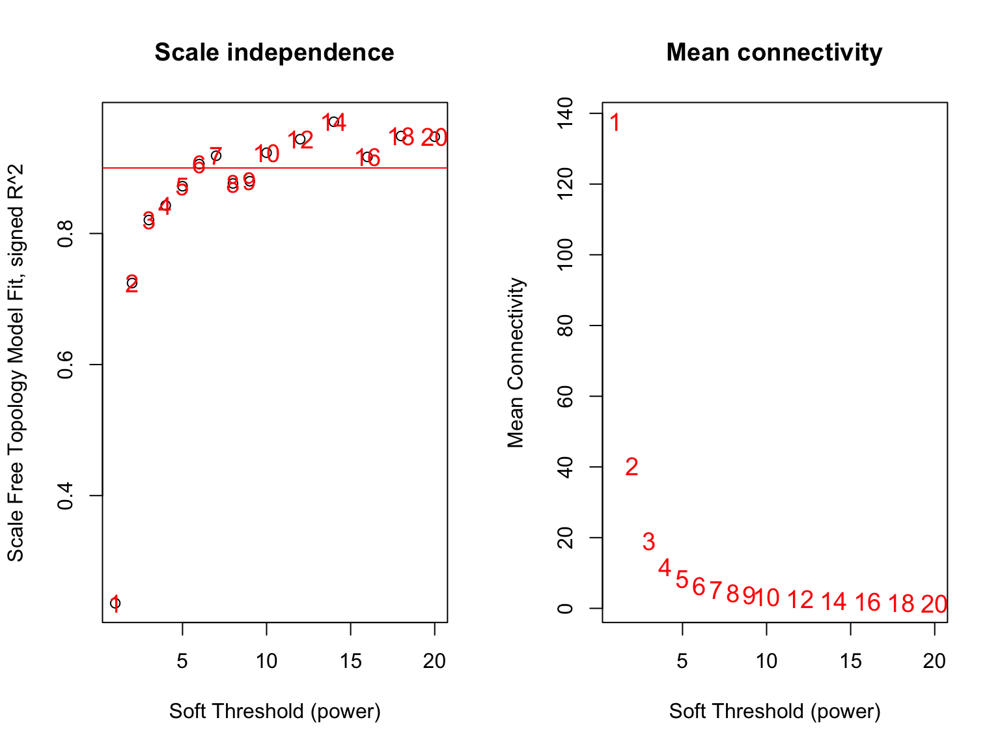
3.6.5.3 Single network with WGCNA (bicor) as association measure
Biweight Midcorrelation bicor() from WGCNA package.
3.6.5.3.1 Building network model
net_single3 <- netConstruct(features_tab,
measure = "bicor",
measurePar = list(use = "all.obs",
maxPOutliers = 1,
nThreads = 2),
filtTax = "highestVar",
filtTaxPar = list(highestVar = 50),
filtSamp = "totalReads",
filtSampPar = list(totalReads = 100),
dissFunc = "TOMdiss",
verbose = 3)## ..will use 2 parallel threads.
## Fraction of slow calculations: 0.0000003.6.5.3.2 Visualizing the network
props_single3 <- netAnalyze(net_single3, clustMethod = "cluster_fast_greedy")
plot(props_single3,
nodeColor = "cluster",
nodeSize = "eigenvector",
repulsion = 0.8,
rmSingles = TRUE,
labelScale = FALSE,
cexLabels = 1.6,
nodeSizeSpread = 3,
cexNodes = 2,
title1 = "Network on metabolomics with WGCNA correlations",
showTitle = TRUE,
cexTitle = 1.5)
legend(0.7, 1.1, cex = 1.2, title = "estimated correlation:",
legend = c("+","-"), lty = 1, lwd = 3, col = c("#009900","red"),
bty = "n", horiz = TRUE)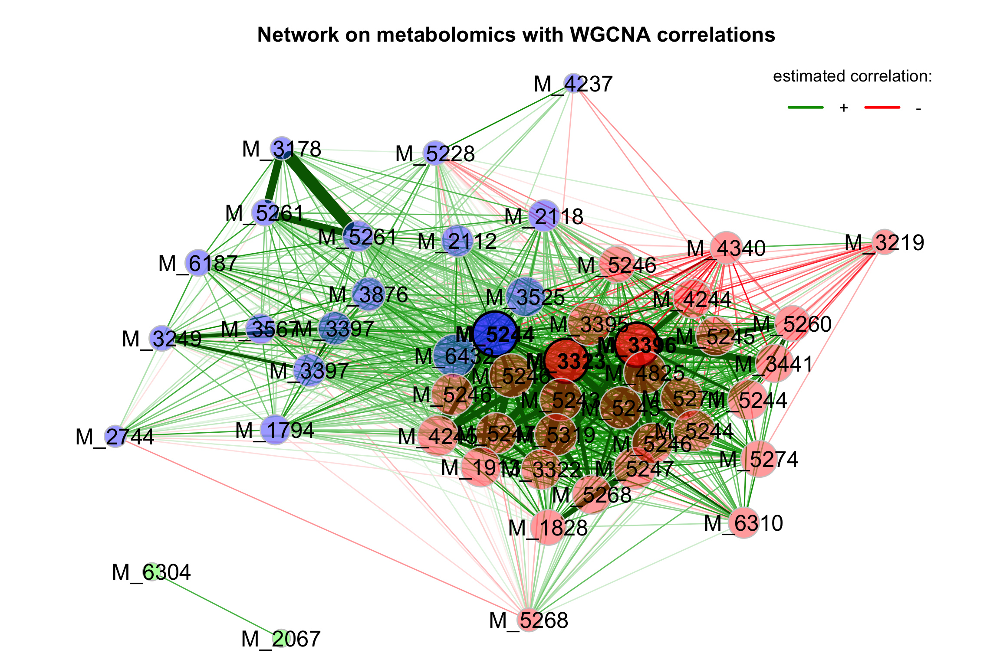
3.6.6 Network comparison
Comparing two networks by NetCoMi.
3.6.6.1 Data preparing
group_names <- c("Mild", "Severe")
se_filter_subset <- se_filter[, se_filter$group %in% group_names]
se_filter_subset$group <- factor(as.character(se_filter_subset$group))
features_tab <- SummarizedExperiment::assay(se_filter_subset) %>%
t()
features_tab[is.na(features_tab)] <- 0
group_vector <- se_filter_subset$group3.6.6.3 Network analysis
props_group <- netAnalyze(net_group,
centrLCC = FALSE,
avDissIgnoreInf = TRUE,
sPathNorm = FALSE,
clustMethod = "cluster_fast_greedy",
hubPar = c("degree", "between", "closeness"),
hubQuant = 0.9,
lnormFit = TRUE,
normDeg = FALSE,
normBetw = FALSE,
normClose = FALSE,
normEigen = FALSE)
summary(props_group)##
## Component sizes
## ```````````````
## Group 1:
## size: 167
## #: 1
##
## Group 2:
## size: 167
## #: 1
## ______________________________
## Global network properties
## `````````````````````````
## group '1' group '2'
## Number of components 1.00000 1.00000
## Clustering coefficient 0.46890 0.45147
## Modularity 0.06069 0.06436
## Positive edge percentage 50.68785 52.11131
## Edge density 0.37234 0.37075
## Natural connectivity 0.10764 0.10844
## Vertex connectivity 33.00000 35.00000
## Edge connectivity 33.00000 35.00000
## Average dissimilarity* 0.67686 0.67218
## Average path length** 0.87528 0.86466
##
## *Dissimilarity = 1 - edge weight
## **Path length: Sum of dissimilarities along the path
##
## ______________________________
## Clusters
## - In the whole network
## - Algorithm: cluster_fast_greedy
## ````````````````````````````````
## group '1':
## name: 1 2 3
## #: 81 33 53
##
## group '2':
## name: 1 2 3
## #: 55 52 60
##
## ______________________________
## Hubs
## - In alphabetical/numerical order
## - Based on log-normal quantiles of centralities
## ```````````````````````````````````````````````
## group '1' group '2'
## M_48258 M_33230
## M_52447 M_35631
## M_52467 M_42398
## M_52452
## M_52462
##
## ______________________________
## Centrality measures
## - In decreasing order
## - Computed for the complete network
## ````````````````````````````````````
## Degree (unnormalized):
## group '1' group '2'
## M_53180 90 67
## M_48258 89 63
## M_52467 84 45
## M_52447 83 56
## M_46115 82 57
## ______ ______
## M_35631 57 83
## M_33230 80 82
## M_52474 77 81
## M_52462 64 79
## M_52452 61 79
##
## Betweenness centrality (unnormalized):
## group '1' group '2'
## M_53180 127 70
## M_52447 122 53
## M_62805 117 45
## M_52467 113 23
## M_42449 107 76
## ______ ______
## M_42398 65 126
## M_36600 63 104
## M_52281 39 97
## M_52462 70 96
## M_52452 75 96
##
## Closeness centrality (unnormalized):
## group '1' group '2'
## M_52464 234.21854 218.76093
## M_52447 233.58239 219.26645
## M_52669 233.55223 188.04641
## M_33961 233.5356 237.105
## M_19263 232.73107 211.31774
## ______ ______
## M_33230 228.08708 240.52716
## M_52462 220.20663 240.09054
## M_33955 231.77567 239.49465
## M_35631 206.06295 239.35578
## M_52474 228.59113 239.13909
##
## Eigenvector centrality (unnormalized):
## group '1' group '2'
## M_52467 0.12638 0.05312
## M_33230 0.12329 0.13395
## M_48258 0.12211 0.11358
## M_52447 0.12038 0.07532
## M_35186 0.12025 0.13431
## ______ ______
## M_35631 0.07576 0.13915
## M_52474 0.10472 0.13506
## M_33955 0.12001 0.13501
## M_35186 0.12025 0.13431
## M_33230 0.12329 0.133953.6.6.4 Visualizing the network
plot(props_group,
sameLayout = TRUE,
layoutGroup = 1,
rmSingles = "inboth",
nodeSize = "mclr",
labelScale = FALSE,
cexNodes = 1,
cexLabels = 1.5,
cexHubLabels = 2,
cexTitle = 2,
groupNames = group_names,
hubBorderCol = "gray40")
legend("bottom", title = "estimated association:", legend = c("+", "-"),
col = c("#009900","red"), inset = 0.04, cex = 3, lty = 1, lwd = 4,
bty = "n", horiz = TRUE)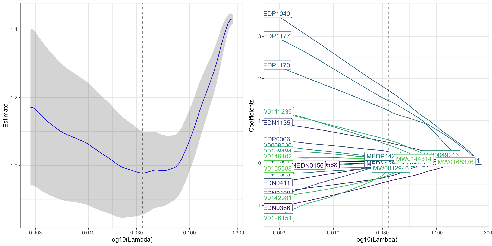
3.6.6.5 Quantitative network comparison
comp_group <- netCompare(props_group, permTest = FALSE, verbose = FALSE)
summary(comp_group,
groupNames = group_names,
showCentr = c("degree", "between", "closeness"),
numbNodes = 5)##
## Comparison of Network Properties
## ----------------------------------
## CALL:
## netCompare(x = props_group, permTest = FALSE, verbose = FALSE)
##
## ______________________________
## Global network properties
## `````````````````````````
## Mild Severe difference
## Number of components 1.000 1.000 0.000
## Clustering coefficient 0.469 0.451 0.017
## Moduarity 0.061 0.064 0.004
## Positive edge percentage 50.688 52.111 1.423
## Edge density 0.372 0.371 0.002
## Natural connectivity 0.108 0.108 0.001
## Vertex connectivity 33.000 35.000 2.000
## Edge connectivity 33.000 35.000 2.000
## Average dissimilarity* 0.677 0.672 0.005
## Average path length** 0.875 0.865 0.011
## -----
## *: Dissimilarity = 1 - edge weight
## **Path length: Sum of dissimilarities along the path
##
## ______________________________
## Jaccard index (similarity betw. sets of most central nodes)
## ``````````````````````````````````````````````````````````
## Jacc P(<=Jacc) P(>=Jacc)
## degree 0.171 0.001255 ** 0.999517
## betweenness centr. 0.237 0.045289 * 0.974501
## closeness centr. 0.348 0.656742 0.442460
## eigenvec. centr. 0.382 0.838125 0.231086
## hub taxa 0.000 0.039018 * 1.000000
## -----
## Jaccard index ranges from 0 (compl. different) to 1 (sets equal)
##
## ______________________________
## Adjusted Rand index (similarity betw. clusterings)
## ``````````````````````````````````````````````````
## ARI p-value
## 0.048 0.001
## -----
## ARI in [-1,1] with ARI=1: perfect agreement betw. clusterings,
## ARI=0: expected for two random clusterings
## p-value: two-tailed test with null hypothesis ARI=0
##
## ______________________________
## Centrality measures
## - In decreasing order
## - Computed for the complete network
## ````````````````````````````````````
## Degree (unnormalized):
## Mild Severe abs.diff.
## M_52610 35 75 40
## M_52467 84 45 39
## M_52669 77 38 39
## M_62805 81 45 36
## M_52478 36 68 32
##
## Betweenness centrality (unnormalized):
## Mild Severe abs.diff.
## M_52467 113 23 90
## M_57663 101 24 77
## M_62805 117 45 72
## M_52669 87 16 71
## M_52447 122 53 69
##
## Closeness centrality (unnormalized):
## Mild Severe abs.diff.
## M_52669 233.552 188.046 45.506
## M_52467 232.354 194.418 37.936
## M_35631 206.063 239.356 33.293
## M_52610 187.991 219.596 31.605
## M_35153 191.201 222.693 31.491
##
## _________________________________________________________
## Significance codes: ***: 0.001, **: 0.01, *: 0.05, .: 0.13.7 Systematic Information
## ─ Session info ─────────────────────────────────────────────────────────────────────────────────────────────────────────────────────────────────────
## setting value
## version R version 4.1.3 (2022-03-10)
## os macOS Monterey 12.2.1
## system x86_64, darwin17.0
## ui RStudio
## language (EN)
## collate en_US.UTF-8
## ctype en_US.UTF-8
## tz Asia/Shanghai
## date 2023-12-07
## rstudio 2023.09.0+463 Desert Sunflower (desktop)
## pandoc 3.1.1 @ /Applications/RStudio.app/Contents/Resources/app/quarto/bin/tools/ (via rmarkdown)
##
## ─ Packages ─────────────────────────────────────────────────────────────────────────────────────────────────────────────────────────────────────────
## package * version date (UTC) lib source
## abind 1.4-5 2016-07-21 [2] CRAN (R 4.1.0)
## ade4 1.7-22 2023-02-06 [2] CRAN (R 4.1.2)
## annotate 1.72.0 2021-10-26 [2] Bioconductor
## AnnotationDbi 1.60.2 2023-03-10 [2] Bioconductor
## ape 5.7-1 2023-03-13 [2] CRAN (R 4.1.2)
## backports 1.4.1 2021-12-13 [2] CRAN (R 4.1.0)
## base64enc 0.1-3 2015-07-28 [2] CRAN (R 4.1.0)
## Biobase * 2.54.0 2021-10-26 [2] Bioconductor
## BiocGenerics * 0.40.0 2021-10-26 [2] Bioconductor
## BiocParallel 1.28.3 2021-12-09 [2] Bioconductor
## biomformat 1.22.0 2021-10-26 [2] Bioconductor
## Biostrings 2.62.0 2021-10-26 [2] Bioconductor
## bit 4.0.5 2022-11-15 [2] CRAN (R 4.1.2)
## bit64 4.0.5 2020-08-30 [2] CRAN (R 4.1.0)
## bitops 1.0-7 2021-04-24 [2] CRAN (R 4.1.0)
## blob 1.2.4 2023-03-17 [2] CRAN (R 4.1.2)
## bookdown 0.34 2023-05-09 [2] CRAN (R 4.1.2)
## broom 1.0.5 2023-06-09 [2] CRAN (R 4.1.3)
## bslib 0.6.0 2023-11-21 [1] CRAN (R 4.1.3)
## cachem 1.0.8 2023-05-01 [2] CRAN (R 4.1.2)
## callr 3.7.3 2022-11-02 [2] CRAN (R 4.1.2)
## car 3.1-2 2023-03-30 [2] CRAN (R 4.1.2)
## carData 3.0-5 2022-01-06 [2] CRAN (R 4.1.2)
## caret 6.0-94 2023-03-21 [2] CRAN (R 4.1.2)
## caTools 1.18.2 2021-03-28 [2] CRAN (R 4.1.0)
## cellranger 1.1.0 2016-07-27 [2] CRAN (R 4.1.0)
## checkmate 2.2.0 2023-04-27 [2] CRAN (R 4.1.2)
## circlize 0.4.15 2022-05-10 [2] CRAN (R 4.1.2)
## class 7.3-22 2023-05-03 [2] CRAN (R 4.1.2)
## cli 3.6.1 2023-03-23 [2] CRAN (R 4.1.2)
## clue 0.3-64 2023-01-31 [2] CRAN (R 4.1.2)
## cluster * 2.1.4 2022-08-22 [2] CRAN (R 4.1.2)
## codetools 0.2-19 2023-02-01 [2] CRAN (R 4.1.2)
## coin 1.4-2 2021-10-08 [2] CRAN (R 4.1.0)
## colorspace 2.1-0 2023-01-23 [2] CRAN (R 4.1.2)
## ComplexHeatmap 2.10.0 2021-10-26 [2] Bioconductor
## corpcor 1.6.10 2021-09-16 [2] CRAN (R 4.1.0)
## cowplot 1.1.1 2020-12-30 [2] CRAN (R 4.1.0)
## crayon 1.5.2 2022-09-29 [2] CRAN (R 4.1.2)
## data.table 1.14.8 2023-02-17 [2] CRAN (R 4.1.2)
## DBI 1.1.3 2022-06-18 [2] CRAN (R 4.1.2)
## DelayedArray 0.20.0 2021-10-26 [2] Bioconductor
## dendextend * 1.17.1 2023-03-25 [2] CRAN (R 4.1.2)
## DESeq2 1.34.0 2021-10-26 [2] Bioconductor
## devtools 2.4.5 2022-10-11 [2] CRAN (R 4.1.2)
## digest 0.6.33 2023-07-07 [1] CRAN (R 4.1.3)
## doParallel 1.0.17 2022-02-07 [2] CRAN (R 4.1.2)
## doRNG 1.8.6 2023-01-16 [2] CRAN (R 4.1.2)
## doSNOW 1.0.20 2022-02-04 [2] CRAN (R 4.1.2)
## dplyr * 1.1.2 2023-04-20 [2] CRAN (R 4.1.2)
## dynamicTreeCut 1.63-1 2016-03-11 [2] CRAN (R 4.1.0)
## e1071 1.7-13 2023-02-01 [2] CRAN (R 4.1.2)
## edgeR 3.36.0 2021-10-26 [2] Bioconductor
## ellipse 0.4.5 2023-04-05 [2] CRAN (R 4.1.2)
## ellipsis 0.3.2 2021-04-29 [2] CRAN (R 4.1.0)
## evaluate 0.21 2023-05-05 [2] CRAN (R 4.1.2)
## factoextra * 1.0.7 2020-04-01 [2] CRAN (R 4.1.0)
## fansi 1.0.4 2023-01-22 [2] CRAN (R 4.1.2)
## farver 2.1.1 2022-07-06 [2] CRAN (R 4.1.2)
## fastcluster 1.2.3 2021-05-24 [2] CRAN (R 4.1.0)
## fastmap 1.1.1 2023-02-24 [2] CRAN (R 4.1.2)
## fdrtool 1.2.17 2021-11-13 [2] CRAN (R 4.1.0)
## filematrix 1.3 2018-02-27 [2] CRAN (R 4.1.0)
## foreach 1.5.2 2022-02-02 [2] CRAN (R 4.1.2)
## foreign 0.8-84 2022-12-06 [2] CRAN (R 4.1.2)
## forestplot 3.1.1 2022-12-06 [2] CRAN (R 4.1.2)
## Formula 1.2-5 2023-02-24 [2] CRAN (R 4.1.2)
## fs 1.6.2 2023-04-25 [2] CRAN (R 4.1.2)
## future 1.33.0 2023-07-01 [2] CRAN (R 4.1.3)
## future.apply 1.11.0 2023-05-21 [2] CRAN (R 4.1.3)
## genefilter 1.76.0 2021-10-26 [2] Bioconductor
## geneplotter 1.72.0 2021-10-26 [2] Bioconductor
## generics 0.1.3 2022-07-05 [2] CRAN (R 4.1.2)
## GenomeInfoDb * 1.30.1 2022-01-30 [2] Bioconductor
## GenomeInfoDbData 1.2.7 2022-03-09 [2] Bioconductor
## GenomicRanges * 1.46.1 2021-11-18 [2] Bioconductor
## GetoptLong 1.0.5 2020-12-15 [2] CRAN (R 4.1.0)
## ggforce 0.4.1 2022-10-04 [2] CRAN (R 4.1.2)
## ggplot2 * 3.4.2 2023-04-03 [2] CRAN (R 4.1.2)
## ggpubr 0.6.0 2023-02-10 [2] CRAN (R 4.1.2)
## ggraph * 2.1.0.9000 2023-07-11 [1] Github (thomasp85/ggraph@febab71)
## ggrepel 0.9.3 2023-02-03 [2] CRAN (R 4.1.2)
## ggsignif 0.6.4 2022-10-13 [2] CRAN (R 4.1.2)
## glasso 1.11 2019-10-01 [2] CRAN (R 4.1.0)
## glmnet * 4.1-7 2023-03-23 [2] CRAN (R 4.1.2)
## GlobalOptions 0.1.2 2020-06-10 [2] CRAN (R 4.1.0)
## globals 0.16.2 2022-11-21 [2] CRAN (R 4.1.2)
## glue * 1.6.2 2022-02-24 [2] CRAN (R 4.1.2)
## Gmisc * 3.0.2 2023-03-13 [2] CRAN (R 4.1.2)
## gmm 1.8 2023-06-06 [2] CRAN (R 4.1.3)
## gmp 0.7-1 2023-02-07 [2] CRAN (R 4.1.2)
## GO.db 3.14.0 2022-04-11 [2] Bioconductor
## gower 1.0.1 2022-12-22 [2] CRAN (R 4.1.2)
## gplots 3.1.3 2022-04-25 [2] CRAN (R 4.1.2)
## graphlayouts 1.0.0 2023-05-01 [2] CRAN (R 4.1.2)
## gridExtra 2.3 2017-09-09 [2] CRAN (R 4.1.0)
## gtable 0.3.3 2023-03-21 [2] CRAN (R 4.1.2)
## gtools 3.9.4 2022-11-27 [2] CRAN (R 4.1.2)
## hardhat 1.3.0 2023-03-30 [2] CRAN (R 4.1.2)
## highr 0.10 2022-12-22 [2] CRAN (R 4.1.2)
## Hmisc 5.1-0 2023-05-08 [2] CRAN (R 4.1.2)
## htmlTable * 2.4.1 2022-07-07 [2] CRAN (R 4.1.2)
## htmltools 0.5.7 2023-11-03 [1] CRAN (R 4.1.3)
## htmlwidgets 1.6.2 2023-03-17 [2] CRAN (R 4.1.2)
## httpuv 1.6.11 2023-05-11 [2] CRAN (R 4.1.3)
## httr 1.4.6 2023-05-08 [2] CRAN (R 4.1.2)
## huge 1.3.5 2021-06-30 [2] CRAN (R 4.1.0)
## igraph 1.5.0 2023-06-16 [1] CRAN (R 4.1.3)
## impute 1.68.0 2021-10-26 [2] Bioconductor
## imputeLCMD 2.1 2022-06-10 [2] CRAN (R 4.1.2)
## ipred 0.9-14 2023-03-09 [2] CRAN (R 4.1.2)
## IRanges * 2.28.0 2021-10-26 [2] Bioconductor
## irlba 2.3.5.1 2022-10-03 [2] CRAN (R 4.1.2)
## iterators 1.0.14 2022-02-05 [2] CRAN (R 4.1.2)
## itertools 0.1-3 2014-03-12 [2] CRAN (R 4.1.0)
## jpeg 0.1-10 2022-11-29 [2] CRAN (R 4.1.2)
## jquerylib 0.1.4 2021-04-26 [2] CRAN (R 4.1.0)
## jsonlite 1.8.7 2023-06-29 [2] CRAN (R 4.1.3)
## KEGGREST 1.34.0 2021-10-26 [2] Bioconductor
## KernSmooth 2.23-22 2023-07-10 [2] CRAN (R 4.1.3)
## knitr 1.43 2023-05-25 [2] CRAN (R 4.1.3)
## labeling 0.4.2 2020-10-20 [2] CRAN (R 4.1.0)
## later 1.3.1 2023-05-02 [2] CRAN (R 4.1.2)
## lattice 0.21-8 2023-04-05 [2] CRAN (R 4.1.2)
## lava 1.7.2.1 2023-02-27 [2] CRAN (R 4.1.2)
## lavaan 0.6-15 2023-03-14 [2] CRAN (R 4.1.2)
## lazyeval 0.2.2 2019-03-15 [2] CRAN (R 4.1.0)
## libcoin 1.0-9 2021-09-27 [2] CRAN (R 4.1.0)
## lifecycle 1.0.3 2022-10-07 [2] CRAN (R 4.1.2)
## limma 3.50.3 2022-04-07 [2] Bioconductor
## listenv 0.9.0 2022-12-16 [2] CRAN (R 4.1.2)
## locfit 1.5-9.8 2023-06-11 [2] CRAN (R 4.1.3)
## lubridate 1.9.2 2023-02-10 [2] CRAN (R 4.1.2)
## magrittr * 2.0.3 2022-03-30 [2] CRAN (R 4.1.2)
## MASS 7.3-60 2023-05-04 [2] CRAN (R 4.1.2)
## Matrix * 1.6-0 2023-07-08 [2] CRAN (R 4.1.3)
## MatrixGenerics * 1.6.0 2021-10-26 [2] Bioconductor
## matrixStats * 1.0.0 2023-06-02 [2] CRAN (R 4.1.3)
## memoise 2.0.1 2021-11-26 [2] CRAN (R 4.1.0)
## metagenomeSeq 1.36.0 2021-10-26 [2] Bioconductor
## mgcv 1.8-42 2023-03-02 [2] CRAN (R 4.1.2)
## mime 0.12 2021-09-28 [2] CRAN (R 4.1.0)
## miniUI 0.1.1.1 2018-05-18 [2] CRAN (R 4.1.0)
## missForest 1.5 2022-04-14 [2] CRAN (R 4.1.2)
## mixedCCA 1.6.2 2022-09-09 [2] CRAN (R 4.1.2)
## mixOmics 6.18.1 2021-11-18 [2] Bioconductor (R 4.1.2)
## mnormt 2.1.1 2022-09-26 [2] CRAN (R 4.1.2)
## ModelMetrics 1.2.2.2 2020-03-17 [2] CRAN (R 4.1.0)
## modeltools 0.2-23 2020-03-05 [2] CRAN (R 4.1.0)
## multcomp 1.4-25 2023-06-20 [2] CRAN (R 4.1.3)
## multtest 2.50.0 2021-10-26 [2] Bioconductor
## munsell 0.5.0 2018-06-12 [2] CRAN (R 4.1.0)
## mvtnorm 1.2-2 2023-06-08 [2] CRAN (R 4.1.3)
## NetCoMi * 1.0.3 2022-07-14 [2] Github (stefpeschel/NetCoMi@d4d80d3)
## nlme 3.1-162 2023-01-31 [2] CRAN (R 4.1.2)
## nnet 7.3-19 2023-05-03 [2] CRAN (R 4.1.2)
## norm 1.0-11.1 2023-06-18 [2] CRAN (R 4.1.3)
## parallelly 1.36.0 2023-05-26 [2] CRAN (R 4.1.3)
## pbapply 1.7-2 2023-06-27 [2] CRAN (R 4.1.3)
## pbivnorm 0.6.0 2015-01-23 [2] CRAN (R 4.1.0)
## pcaMethods 1.86.0 2021-10-26 [2] Bioconductor
## pcaPP 2.0-3 2022-10-24 [2] CRAN (R 4.1.2)
## permute 0.9-7 2022-01-27 [2] CRAN (R 4.1.2)
## phyloseq 1.38.0 2021-10-26 [2] Bioconductor
## pillar 1.9.0 2023-03-22 [2] CRAN (R 4.1.2)
## pkgbuild 1.4.2 2023-06-26 [2] CRAN (R 4.1.3)
## pkgconfig 2.0.3 2019-09-22 [2] CRAN (R 4.1.0)
## pkgload 1.3.2.1 2023-07-08 [2] CRAN (R 4.1.3)
## plotly * 4.10.2 2023-06-03 [2] CRAN (R 4.1.3)
## plyr 1.8.8 2022-11-11 [2] CRAN (R 4.1.2)
## png 0.1-8 2022-11-29 [2] CRAN (R 4.1.2)
## polyclip 1.10-4 2022-10-20 [2] CRAN (R 4.1.2)
## POMA * 1.7.2 2022-07-26 [2] Github (pcastellanoescuder/POMA@bc8a972)
## preprocessCore 1.56.0 2021-10-26 [2] Bioconductor
## prettyunits 1.1.1 2020-01-24 [2] CRAN (R 4.1.0)
## pROC 1.18.4 2023-07-06 [2] CRAN (R 4.1.3)
## processx 3.8.2 2023-06-30 [2] CRAN (R 4.1.3)
## prodlim 2023.03.31 2023-04-02 [2] CRAN (R 4.1.2)
## profvis 0.3.8 2023-05-02 [2] CRAN (R 4.1.2)
## promises 1.2.0.1 2021-02-11 [2] CRAN (R 4.1.0)
## proxy 0.4-27 2022-06-09 [2] CRAN (R 4.1.2)
## ps 1.7.5 2023-04-18 [2] CRAN (R 4.1.2)
## psych 2.3.6 2023-06-21 [2] CRAN (R 4.1.3)
## pulsar 0.3.10 2023-01-26 [2] CRAN (R 4.1.2)
## purrr 1.0.1 2023-01-10 [2] CRAN (R 4.1.2)
## qgraph 1.9.5 2023-05-16 [2] CRAN (R 4.1.3)
## quadprog 1.5-8 2019-11-20 [2] CRAN (R 4.1.0)
## R6 2.5.1 2021-08-19 [2] CRAN (R 4.1.0)
## randomForest 4.7-1.1 2022-05-23 [2] CRAN (R 4.1.2)
## RankProd 3.20.0 2021-10-26 [2] Bioconductor
## rARPACK 0.11-0 2016-03-10 [2] CRAN (R 4.1.0)
## rbibutils 2.2.13 2023-01-13 [2] CRAN (R 4.1.2)
## RColorBrewer 1.1-3 2022-04-03 [2] CRAN (R 4.1.2)
## Rcpp * 1.0.11 2023-07-06 [1] CRAN (R 4.1.3)
## RCurl 1.98-1.12 2023-03-27 [2] CRAN (R 4.1.2)
## Rdpack 2.4 2022-07-20 [2] CRAN (R 4.1.2)
## readxl * 1.4.3 2023-07-06 [2] CRAN (R 4.1.3)
## recipes 1.0.6 2023-04-25 [2] CRAN (R 4.1.2)
## remotes 2.4.2 2021-11-30 [2] CRAN (R 4.1.0)
## reshape2 1.4.4 2020-04-09 [2] CRAN (R 4.1.0)
## rhdf5 2.38.1 2022-03-10 [2] Bioconductor
## rhdf5filters 1.6.0 2021-10-26 [2] Bioconductor
## Rhdf5lib 1.16.0 2021-10-26 [2] Bioconductor
## rjson 0.2.21 2022-01-09 [2] CRAN (R 4.1.2)
## rlang 1.1.1 2023-04-28 [1] CRAN (R 4.1.2)
## rmarkdown 2.23 2023-07-01 [2] CRAN (R 4.1.3)
## Rmpfr 0.9-2 2023-04-22 [2] CRAN (R 4.1.2)
## rngtools 1.5.2 2021-09-20 [2] CRAN (R 4.1.0)
## rootSolve 1.8.2.3 2021-09-29 [2] CRAN (R 4.1.0)
## ropls * 1.26.4 2022-01-11 [2] Bioconductor
## rpart 4.1.19 2022-10-21 [2] CRAN (R 4.1.2)
## RSpectra 0.16-1 2022-04-24 [2] CRAN (R 4.1.2)
## RSQLite 2.3.1 2023-04-03 [2] CRAN (R 4.1.2)
## rstatix 0.7.2 2023-02-01 [2] CRAN (R 4.1.2)
## rstudioapi 0.15.0 2023-07-07 [2] CRAN (R 4.1.3)
## S4Vectors * 0.32.4 2022-03-29 [2] Bioconductor
## sandwich 3.0-2 2022-06-15 [2] CRAN (R 4.1.2)
## sass 0.4.6 2023-05-03 [2] CRAN (R 4.1.2)
## scales 1.2.1 2022-08-20 [2] CRAN (R 4.1.2)
## sessioninfo 1.2.2 2021-12-06 [2] CRAN (R 4.1.0)
## shape 1.4.6 2021-05-19 [2] CRAN (R 4.1.0)
## shiny 1.7.4.1 2023-07-06 [2] CRAN (R 4.1.3)
## snow 0.4-4 2021-10-27 [2] CRAN (R 4.1.0)
## SpiecEasi * 1.1.2 2022-07-14 [2] Github (zdk123/SpiecEasi@c463727)
## SPRING * 1.0.4 2022-08-03 [2] Github (GraceYoon/SPRING@3d641a4)
## stringi 1.7.12 2023-01-11 [2] CRAN (R 4.1.2)
## stringr 1.5.0 2022-12-02 [2] CRAN (R 4.1.2)
## SummarizedExperiment * 1.24.0 2021-10-26 [2] Bioconductor
## survival 3.5-5 2023-03-12 [2] CRAN (R 4.1.2)
## TH.data 1.1-2 2023-04-17 [2] CRAN (R 4.1.2)
## tibble * 3.2.1 2023-03-20 [2] CRAN (R 4.1.2)
## tidygraph 1.2.3 2023-02-01 [2] CRAN (R 4.1.2)
## tidyr 1.3.0 2023-01-24 [2] CRAN (R 4.1.2)
## tidyselect 1.2.0 2022-10-10 [2] CRAN (R 4.1.2)
## timechange 0.2.0 2023-01-11 [2] CRAN (R 4.1.2)
## timeDate 4022.108 2023-01-07 [2] CRAN (R 4.1.2)
## tmvtnorm 1.5 2022-03-22 [2] CRAN (R 4.1.2)
## tweenr 2.0.2 2022-09-06 [2] CRAN (R 4.1.2)
## urlchecker 1.0.1 2021-11-30 [2] CRAN (R 4.1.0)
## usethis 2.2.2 2023-07-06 [2] CRAN (R 4.1.3)
## utf8 1.2.3 2023-01-31 [2] CRAN (R 4.1.2)
## vctrs 0.6.3 2023-06-14 [1] CRAN (R 4.1.3)
## vegan 2.6-4 2022-10-11 [2] CRAN (R 4.1.2)
## VGAM 1.1-8 2023-03-09 [2] CRAN (R 4.1.2)
## viridis 0.6.3 2023-05-03 [2] CRAN (R 4.1.2)
## viridisLite 0.4.2 2023-05-02 [2] CRAN (R 4.1.2)
## WGCNA 1.72-1 2023-01-18 [2] CRAN (R 4.1.2)
## withr 2.5.0 2022-03-03 [2] CRAN (R 4.1.2)
## Wrench 1.12.0 2021-10-26 [2] Bioconductor
## xfun 0.40 2023-08-09 [1] CRAN (R 4.1.3)
## XMAS2 * 2.2.0 2023-12-06 [1] local
## XML 3.99-0.14 2023-03-19 [2] CRAN (R 4.1.2)
## xtable 1.8-4 2019-04-21 [2] CRAN (R 4.1.0)
## XVector 0.34.0 2021-10-26 [2] Bioconductor
## yaml 2.3.7 2023-01-23 [2] CRAN (R 4.1.2)
## zlibbioc 1.40.0 2021-10-26 [2] Bioconductor
## zoo 1.8-12 2023-04-13 [2] CRAN (R 4.1.2)
##
## [1] /Users/zouhua/Library/R/x86_64/4.1/library
## [2] /Library/Frameworks/R.framework/Versions/4.1/Resources/library
##
## ────────────────────────────────────────────────────────────────────────────────────────────────────────────────────────────────────────────────────